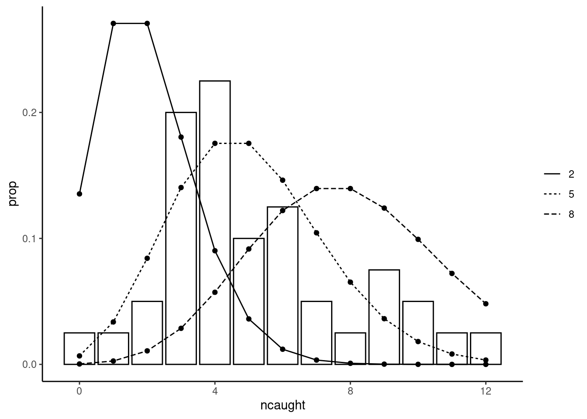
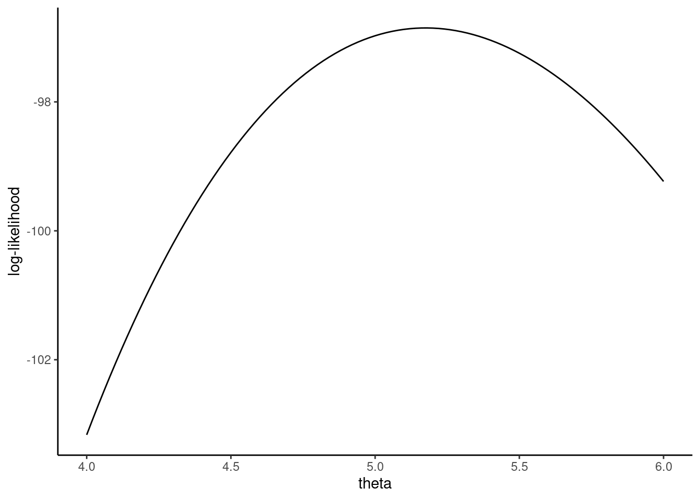
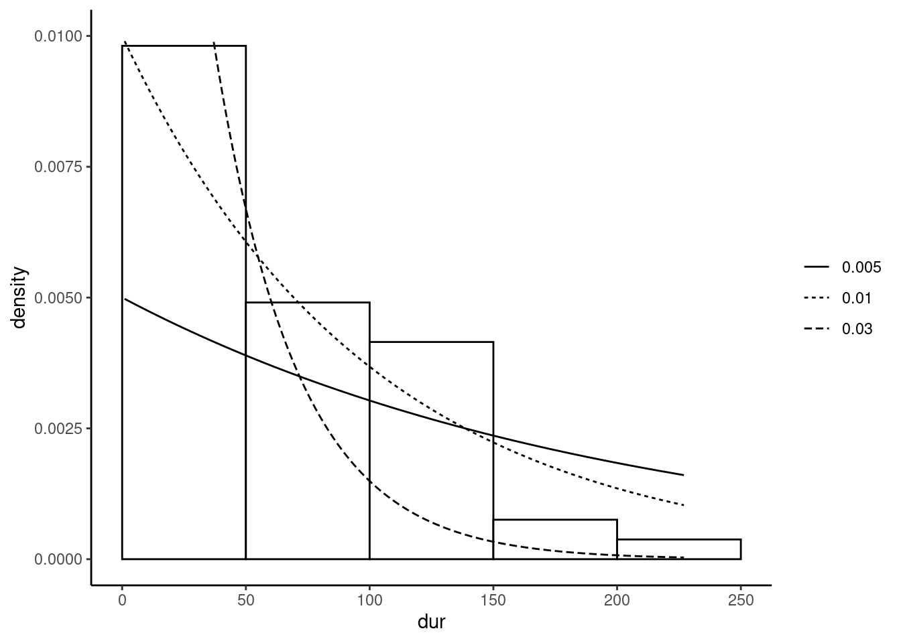
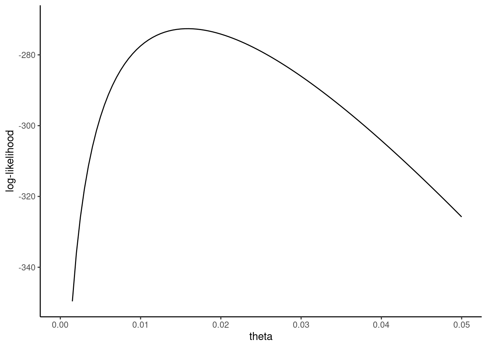

5 Maximum likelihood estimator
The maximum likelihood (ML) estimator is suitable in situations where the GDP of the response is perfectly known (or supposed to be), up to some unknown parameters. It is particularly useful for models where the response is not continuous but, for example, it is a count, a binomial or a multinomial variable.1 Section 5.1 presents the ML estimator for the simplest case where there is a unique parameter to estimate. Section 5.2 extends this basic model to the case where there is a vector of parameters to estimate. Finally Section 5.3 present different tests that are particularly useful in the context of ML estimation.
5.1 ML estimation of a unique parameter
For a first informal view of this estimator, consider two very simple one-parameter distribution functions:
- the Poisson distribution, which is suitable for the distribution of count responses, i.e., responses which can take only non-negative integer values,
- the exponential distribution, which is often used for responses that represent a time span (for example, an unemployment spell).
Computation of the ML estimator for the Poisson distribution
As an example of count data, we consider the cartel data set of Miller (2009) who analyzed the role of commitment to the lenient prosecution of early confessors on cartel enforcement. The response ncaught is a count, the number of cartel discoveries per a 6-month period, for the 1985-2005 period. A Poisson variable is defined by the following mass probability function:
\[ P(y; \theta) = \frac{e ^ {-\theta} \theta ^ y}{y !} \tag{5.1}\]
where \(\theta\) is the unique parameter of the distribution. An important characteristic of this distribution is that \(\mbox{E}(y)=\mbox{V}(y)=\theta\), which means that, for a Poisson variable, the variance equals the expectation. To have a first look at the relevance of this hypothesis for the response of our example, we compute the sample mean and variance:
The two moments are of the same order of magnitude so that we can confidently rely on the Poisson distribution hypothesis. The question is now how to use the information from the sample to estimate the unique parameter of the distribution. Figure 5.1 represents the empirical distribution of the response and adds several lines which represent the Poisson distribution for different values of \(\theta\).

The Poisson distribution is highly asymmetric and has a large mode for \(\theta = 2\), it gets more and more flat and less asymmetric as \(\theta\) increases. From Figure 5.1, we can see that the empirical distribution is very different from the Poisson one for a value of \(\theta\) as small as 2 or as large as 8. For \(\theta = 5\), there is a reasonable correspondence between the empirical and the theoretical distribution. To get unambiguously a value for our estimator, we need an objective function that is a function of \(\theta\) which is, in the context of this chapter, the likelihood function. To construct it, it is much simpler to consider the sample as a random sample. For the first observation \(1\), given a value of \(\theta\), the probability of observing \(y_1\) is \(P(y_1; \theta)\). For the second one, with the random sample hypothesis, the probability of observing \(y_2\) is \(P(y_2;\theta)\) and is independent of \(y_1\). Therefore, the joint probability of observing \((y_1, y_2)\) is \(P(y_1;\theta)\times P(y_2;\theta)\) and, more generally, the probability of observing the values of \(y\) for the whole sample is the likelihood function for a Poisson variable in a random sample which writes:
\[ L(\theta, y) = \Pi_{n=1}^N P(y_n;\theta) \]
and the maximum likelihood estimator of \(\theta\) is the value of \(\theta\) which maximizes the likelihood function. Note the change of notations: \(P(y_n; \theta)\) is the probability mass function, it is a function of \(y^\top = (y_1, y_2, \ldots, y_N)\) and computes a probability for a given (known) value of the parameter of the distribution. The likelihood function \(L(\theta, y)\) is written as a function of the unknown value of the parameter of the distribution and its value depends on the realization of the response vector \(y\) on the sample.
There are several good reasons to consider the logarithm of the likelihood function instead of the likelihood itself. In particular, being a product of \(N\) terms, the likelihood will typically take very high or very low values for large samples. Moreover, the logarithm transforms a product in a sum, which is much more convenient. Note finally that, as the logarithm is a strictly increasing function, maximizing the likelihood or its logarithm leads to the same value of \(\theta\). Taking the log and replacing \(P(y_n; \theta)\) by the expression given in Equation 5.1, we get:
\[ \ln L(\theta, y) = \sum_{n=1} ^ N \ln \frac{e ^ {-\theta} \theta ^ y}{y !} \]
or, regrouping terms:
\[ \ln L(\theta, y) = - N \theta + \ln \theta \sum_{n=1} ^ N y_n - \sum_{n = 1} ^ N \ln y_n ! \]
The log-likelihood is therefore the sum of three terms, and note that the last one doesn’t depend on \(\theta\). For our sample, we have:
y <- cartels$ncaught
N <- length(y)
sum_y <- sum(y)
sum_log_fact_y <- sum(lfactorial(y))
lnl_poisson <- function(theta) - N * theta + log(theta) * sum_y -
sum_log_fact_yThe last line of code define lnl_poisson as a function of theta which returns the value of the log likelihood function for a value of \(\theta\) given the value of the responses in the cartel data set.
Taking some values of \(\theta\), we compute in Table 5.1 the corresponding values of the log likelihood function. The log likelihood function is inverse U-shaped, and the maximum value for the integer values we’ve provided is reached for \(\theta = 5\). Figure 5.2 presents the log likelihood function as a smooth line in the neighborhood of \(\theta = 5\), which indicates that the maximum of the log likelihood function occurs for a value of \(\theta\) between 5.0 and 5.5. The first-order condition for a maximum is that the first derivative of \(\ln L\) with respect to \(\theta\) is 0.
| \(\theta\) | \(\ln L\) |
|---|---|
| 1 | -270.13 |
| 2 | -166.65 |
| 3 | -122.72 |
| 4 | -103.16 |
| 5 | -96.97 |
| 6 | -99.23 |
| 7 | -107.32 |
| 8 | -119.68 |

\[ \frac{\partial \ln L}{\partial \theta} = - N + \frac{\sum_{n=1} ^ N y_n}{\theta}=0 \]
This leads to \(\hat{\theta} = \frac{\sum_{n=1}^N y_n}{N}\). Therefore, in this simple case, we can explicitly obtain the ML estimator by solving the first-order condition, and, moreover, the ML estimator is the sample mean of the response, which is hardly surprising as \(\theta\) is the expected value of \(y\) for a Poisson variable. The second derivative is:
\[ \frac{\partial^2 \ln L}{\partial \theta ^ 2} = - \frac{\sum_{n=1} ^ N y_n}{\theta ^ 2} < 0 \]
and is negative for all values of \(\theta\), which indicates that the log-likelihood is globally concave and therefore that optimum we previously obtained is the global maximum. For our sample, the ML estimator is:
hat_theta <- sum_y / N
hat_theta
## [1] 5.175Computation of the ML estimator for the exponential distribution
The second example illustrates the computation of the ML estimator for a continuous variable. The density of a variable which follows an exponential distribution of parameter \(\theta\) is:
\[ f(y; \theta) = \theta e ^{-\theta y} \]
The expected value and the variance of \(y\) are \(\mbox{E}(y) = 1 / \theta\) and \(\mbox{V}(y) = 1 / \theta ^ 2\) so that, for a variable which follows an exponential distribution, the mean should be equal to the standard deviation. To illustrate the use of the exponential distribution, we use the oil data set of Favero, Pesaran, and Sharma (1994) for which the response dur is the time span between the discovery of an oil field and the date of the British government’s approval to exploit this field.
The sample mean and the standard deviation are close, in conformity with the features of the exponential distribution. Figure 5.3 presents the empirical distribution of dur by a histogram, and we add several exponential density lines for different values of \(\theta\) (0.005, 0.01 and 0.03).

The adjustment between the empirical and the theoretical distribution is quite good with the dotted line which corresponds to \(\theta = 0.01\). The reasoning to construct the log-likelihood function is exactly the same as for the discrete Poisson distribution, except that the mass probability function is replaced by the density function. The log-likelihood function therefore writes:
\[ \ln L(\theta, y) = \sum_{n = 1} ^ N \ln \left(\theta e ^{-\theta y_n}\right) \]
or, regrouping terms:
\[ \ln L(\theta, y) = N \ln \theta - \theta \sum_{n = 1} ^ N y_n \]

The shape of the log-likelihood function is represented in Figure 5.4. As in the Poisson case, the log-likelihood seems to be globally concave, with a global maximum corresponding to a value of \(\theta\) approximately equal to \(0.015\). The first-order condition for a maximum is:
\[ \frac{\partial \ln L}{\partial \theta} = \frac{N}{\theta} - \sum_{n=1}^N y_n \]
which leads to the ML estimator: \(\hat{\theta} = \frac{N}{\sum_{n=1}^N y_n} = \frac{1}{\bar{y}}\). The second derivative is:
\[ \frac{\partial \ln^2 L}{\partial \theta^2} = -\frac{N}{\theta^2} \]
which is negative for all values of \(\theta\), so that \(\hat{\theta}\) is the global maximum of the log-likelihood function. In our example, we get:
hat_theta <- N / sum_y
hat_theta
## [1] 0.01587Properties of the ML estimator
We consider a variable \(y\) for which we observe \(N\) realizations in a random sample. We assume that \(y\) follows a distribution with a unique parameter \(\theta\). The density (if \(y\) is continuous) or the mass probability function (if \(y\) is discrete) is denoted \(\phi(y; \theta)\). We also denote \(\lambda(y; \theta) = \ln \phi(y; \theta)\) and \(\gamma(y; \theta)\) and \(\psi(y; \theta)\) the first two derivatives of \(\lambda\) with \(\theta\). The log likelihood function is then:
\[ \ln L(\theta, y) = \sum_n \lambda(y_n; \theta) = \sum_n \ln \phi(y_n; \theta) \]
with \(y^\top = (y_1, y_2, \ldots, y_N)\) the vector containing all the values of the response in the sample. The “true value” of \(\theta\) is denoted by \(\theta_0\) and the maximum likelihood estimator \(\hat{\theta}\). The proof of the consistency of the ML estimator is based on Jensen’s inequality, which states that, for a random variable \(X\) and a concave function \(f\):
\[ \mbox{E}(f(X)) \leq f(\mbox{E}(X)) \]
As the logarithm is a concave function:
\[ \mbox{E}\ln\frac{L(\theta)}{L(\theta_0)} < \ln \mbox{E}\frac{L(\theta)}{L(\theta_0)} \tag{5.2}\]
The expectation on the right side of the equation is obtained by integrating out \(L(\theta)/L(\theta_0)\) using the density of \(y\), which is \(L(\theta_0)\). Therefore:
\[ \mbox{E}\frac{L(\theta)}{L(\theta_0)} = \int \frac{L(\theta)}{L(\theta_0)} L(\theta_0) dy = \int L(\theta) dy = 1 \]
as any density sums to 1 for the whole support of the variable. Therefore Equation 5.2 implies that:
\[ \mbox{E}\ln L(\theta) \leq \mbox{E}\ln L(\theta_0) \]
Dividing by \(N\) and using the law of large numbers, we also have:
\[ \mbox{plim} \frac{1}{N}\ln L(\theta) \leq \mbox{plim} \frac{1}{N}\ln L(\theta_0) \tag{5.3}\]
As \(\hat{\theta}\) maximizes \(\ln L(\theta)\), it is also the case that \(\ln L (\hat{\theta}) \geq \ln L (\theta)\). Once again, dividing by \(N\) and computing the limit, we have:
\[ \mbox{plim} \frac{1}{N}\ln L(\hat{\theta}) \geq \mbox{plim} \frac{1}{N}\ln L(\theta) \tag{5.4}\]
The only solution for Equation 5.3 and Equation 5.4 to hold is that:
\[ \mbox{plim} \frac{1}{N}\ln L(\hat{\theta}) = \mbox{plim} \frac{1}{N}\ln L(\theta_0) \tag{5.5}\]
Equation 5.5 indicates that, as \(N\) tends to infinity, the average likelihood for \(\hat{\theta}\) converges to the average likelihood for \(\theta_0\). Using a regularity condition, this implies that the estimator is consistent, i.e., that \(\mbox{plim} \,\hat{\theta} = \theta_0\).
The first two derivatives of the log-likelihood functions, which are respectively called the gradient (or the score) and the hessian of the log-likelihood are:
\[ g(\theta, y) = \frac{\partial \ln L}{\partial \theta}(\theta, y) = \sum_{n=1}^N \frac{\partial \lambda}{\partial \theta}(y_n; \theta) = \sum_{n=1}^N \gamma(y_n; \theta) \tag{5.6}\]
and
\[ h(\theta, y) = \frac{\partial^2 \ln L}{\partial \theta^2}(\theta, y) = \sum_{n=1}^N \frac{\partial^2 \lambda}{\partial \theta^2}(y_n; \theta) = \sum_{n=1}^N \psi(y_n; \theta) \tag{5.7}\]
As there is only one parameter to estimate, both functions are scalar functions. For a discrete distribution, the probabilities for every possible \(K\) values of \(y\) (denoted by \(y_k\)) sum to unity:
\[ \sum_{k=1} ^ K \phi(y_k; \theta) = 1 \]
The same result applies with the continuous sum for a continuous random variable:
\[ \int \phi(y; \theta) dy = 1 \]
As \(\phi = e ^ \lambda\), taking the derivative with respect to \(\theta\), we get:
\[ \left\{ \begin{array}{rcl} \displaystyle \sum_{k=1} ^ K \gamma(y_k; \theta) \phi(y_k; \theta)&=& 0 \\ \displaystyle \int \gamma(y; \theta) \phi(y; \theta) dy&=& 0 \end{array} \right. \tag{5.8}\]
Evaluated for the true value \(\theta_0\), Equation 5.8 is the expectation of an individual contribution to the gradient. Therefore, evaluated at the true value of \(\theta\), \(\gamma(y; \theta)\) is a random variable with 0 expectation. Taking now the second derivative with respect to \(\theta\), we get:
\[ \left\{ \begin{array}{rcl} \displaystyle \sum_{k=1} ^ K \gamma(y_k; \theta) ^ 2 \phi(y_k; \theta) + \sum_{k=1} ^ K \psi(y_k; \theta) \phi(y_k; \theta) &=& 0 \\ \displaystyle \int \gamma(y; \theta) ^ 2 \phi(y; \theta) dy + \int \psi(y; \theta) \phi(y; \theta)dy&=& 0 \end{array} \right. \tag{5.9}\]
We denote the first term by \(v_\gamma(\theta)\): evaluated for the true value of the parameter, this is the variance of \(\gamma(y; \theta)\):, \(v_\gamma(\theta_0) = \sigma_\gamma^2\). We denote the second term by \(m_\psi(\theta)\), which is, evaluated for the true value of the parameter, the expectation of \(\psi(y; \theta)\): \(m_\psi(\theta_0) = \mu_\psi\). Therefore, Equation 5.9 indicates that \(\sigma_\gamma ^ 2 = - \mu_\psi\).
The gradient \(g(\theta, y)\) (Equation 5.6) is the sum of \(N\) contributions \(\gamma(y_n; \theta)\) which have 0 expectation. Therefore, its expectation is 0. With the random sample hypothesis, \(\gamma(y_n; \theta)\) and \(\gamma(y_m; \theta)\) are independent for all \(m\neq n\) and the variance of the gradient is therefore the sum of the variances of its \(N\) contributions, which are all equal to \(\sigma^2_\gamma\). Therefore, \(\mbox{V}(g(\theta_0, y)) = N \sigma^2_\gamma\). The variance of the gradient is called the information matrix in the general case, but it is actually in our one parameter case a scalar that we’ll denote \(\iota(\theta_0)\). The hessian being a sum of \(N\) contributions \(\psi(y_n; \theta)\), which have an expectation equal to \(\mu_\psi\), its expected value is \(\mbox{E}(h(\theta_0, y)) = N \mu_\psi\). The result we previously established (\(\sigma_\gamma ^ 2 = - \mu_\psi\)) implies that the variance of the gradient (the information) equals the opposite of the expectation of the hessian:
\[ \iota(\theta_0) = \mbox{V}(g(\theta_0, y)) = - \mbox{E}(h(\theta_0, y)) = N \sigma^2_\gamma = - N\mu_\psi \tag{5.10}\]
This important result is called the information equality. Denoting \(\theta_0\) as the true (unknown) value of the parameter, and omitting for convenience the \(y\) vector, a first-order Taylor expansion of \(g(\hat{\theta})\) around \(\theta_0\) is:
\[ g(\hat{\theta}) \approx g(\theta_0) + h(\theta_0) (\hat{\theta} - \theta_0) \] If we use instead an exact first-order Taylor expansion:
\[ g(\hat{\theta}) = g(\theta_0) + h(\bar{\theta}) (\hat{\theta} - \theta_0) \tag{5.11}\]
where \(\bar{\theta}\) lies between \(\hat{\theta}\) and \(\theta_0\). As \(g(\hat{\theta}) = 0\), solving for \(\hat{\theta} - \theta_0\), we get:
\[ (\hat{\theta} - \theta_0) = - h(\bar{\theta})^{-1} g(\theta_0) \]
or, multiplying by \(\sqrt{N}\):
\[ \sqrt{N}(\hat{\theta} - \theta_0) = - \left(\frac{h(\bar{\theta})}{N}\right)^{-1} \frac{g(\theta_0)}{\sqrt{N}} \]
Assuming that the estimator is consistent, as \(N\) grows, \(\hat{\theta}\) converges to \(\theta_0\) and so does \(\bar{\theta}\). As \(\mbox{E}(h(\theta_0)) = N \mu_\psi\), the expectation of the first term is \(\mu_\psi\), and it is also its probability limit. The second term has a 0 expected value and a variance equal to \(\sigma_\gamma ^ 2\). Therefore, \(\sqrt{N}(\hat{\theta} - \theta_0)\) has a zero expectation and an asymptotic covariance equal to \(\mu_\psi ^ {-2} \sigma_\gamma^2\). Moreover, applying the central-limit theorem, its asymptotic distribution is normal. Therefore:
\[ \sqrt{N}(\hat{\theta}-\theta_0) \overset{p}{\rightarrow} N(0, \mu_\psi ^ {-2} \sigma_\gamma ^ 2) \; \mbox{ and } \; \hat{\theta} \overset{a}{\sim} \mathcal{N}(\theta_0, \mu_\psi ^ {-2} \sigma_\gamma ^ 2 / N) \tag{5.12}\]
Applying the information equality, \(\iota(\theta_0) = N \sigma_\gamma ^ 2(\theta_0) = - N \mu_\psi(\theta_0)\) and therefore:
\[ \hat{\theta} \overset{a}{\sim} \mathcal{N}(\theta_0, \iota(\theta_0) ^ {-1}) \tag{5.13}\]
We have seen that the variance of the ML estimator is the inverse of the information, which can be either obtained using the variance of the gradient or the opposite of the expectation of the hessian. In terms of the average information (\(\iota(\theta) / N\)), we have:
\[ \left\{ \begin{array}{rcl} \frac{\iota(\theta)}{N} &=& \frac{1}{N} \mbox{V}\left(\frac{g(\theta, y)}{\sqrt{N}}\right) = \frac{1}{N} \sum_{n= 1} ^ N \mbox{E}(\gamma(y; \theta) ^ 2) = v_\gamma (\theta) \\ \frac{\iota(\theta)}{N} &=& \frac{1}{N} \mbox{E}\left(- \frac{h(\theta, y)}{N}\right) = - \frac{1}{N} \sum_{n = 1} ^ N \mbox{E}(\psi(y_n; \theta)) = - m_\psi(\theta) \end{array} \right. \tag{5.14}\]
If this variance/expectation can be computed, then a natural estimator of \(\iota(\theta_0)\) is \(\iota(\hat{\theta})\). This information-based estimator of the variance is obtained by inverting the information evaluated for the maximum likelihood value of \(\theta\):
\[ \hat{\sigma}_{\hat{\theta}i} ^ 2 = \iota(\hat{\theta}) ^ {-1} \]
On the contrary, if it is impossible to compute the expectations, two natural estimators of the information are based on the gradient and the hessian and are obtained by evaluating one of the two expressions in Equation 5.14 without the expectation. Denoting \(\iota_g\) and \(\iota_h\), these two estimations of the information, we have from Equation 5.14:
\[ \left\{ \begin{array}{rcl} \frac{\iota_g(\theta)}{N} &=& \frac{1}{N} \sum_{n= 1} ^ N \gamma(y_n; \theta) ^ 2 = \hat{v}_\gamma(\theta) \\ \frac{\iota_h(\theta)}{N} &=& - \frac{h(\theta, y)}{N} = - \frac{1}{N} \sum_{n = 1} ^ N \psi(\theta; y_n) = - \hat{m}_\psi(\theta) \end{array} \right. \]
Evaluated for the maximum likelihood estimator value of \(\theta\), we then get the gradient-based estimator:
\[ \hat{\sigma}_{\hat{\theta} g} ^ 2 = \iota_g(\hat{\theta}) ^ {-1} = \left(\sum_{n= 1} ^ N \gamma(y ; \hat{\theta}) ^ 2\right) ^ {-1} = \frac{1}{N \hat{v}_\gamma(\hat{\theta})} \tag{5.15}\]
and the hessian-based estimator of the variance of \(\theta\):
\[ \hat{\sigma}_{\hat{\theta} h} ^ 2 = \iota_h(\hat{\theta}) ^ {-1} = - h(\hat{\theta}, y) ^ {-1} = - \frac{1}{N \hat{m}_{\psi}(\hat{\theta})} \tag{5.16}\]
A fourth estimator is based on Equation 5.12, which states that, before applying the information equality,
\[ \sigma_{\hat{\theta}} ^ 2 = \frac{1}{N} \frac{v_\gamma(\theta_0)}{m_\psi(\theta_0)^2} \tag{5.17}\]
Removing the expectation from Equation 5.17 and evaluating for the maximum likelihood estimator of \(\theta\), we get the sandwich estimator of the variance of \(\hat{\theta}\). \[ \hat{\sigma} ^ 2 _{\hat{\theta} s} = \frac{1}{N} \left(\sum_{n=1} ^ N \gamma(y_n; \hat{\theta}) ^ 2 /N\right)/ \left(\sum_{n=1} ^ N \psi(y_n; \hat{\theta}) /N\right) ^ 2 =\frac{1}{N}\frac{\hat{v}_\gamma (\hat{\theta})}{\hat{m}_\psi(\hat{\theta})} \tag{5.18}\]
Equation 5.18 is called a sandwich estimator for a reason that will be clear when we’ll compute it in the general case where more than one parameter are estimated. It is a more general estimator than the previous three, as its consistency doesn’t rely on the information equality property, which is only valid if the distribution of \(y\) is correctly specified.
Computation of the variance for the Poisson and the exponential distribution
For the Poisson model, we have:
\[ g(\theta) = - N + \frac{\sum_{n=1} ^ N y_n}{\theta} \mbox{ and } h(\theta) = - \frac{\sum_{n=1} ^ N y_n}{\theta ^ 2} \]
The variance of the gradient is:
\[ \mbox{V}\left(g(\theta)\right) = \frac{1}{\theta ^ 2}\mbox{V}\left(\sum_{n=1} ^ N y_n\right) = \frac{1}{\theta ^ 2}\sum_{n=1} ^ N \mbox{V}\left(y_n\right) = \frac{1}{\theta ^ 2} N \theta = \frac{N}{\theta} \]
The first equality holds because of the random sample hypothesis and the second one because \(\mbox{V}(y) = \theta\). The expected value of the hessian is:
\[ \mbox{E}\left(h(\theta)\right) = - \frac{\sum_{n=1} ^ N \mbox{E}(y_n)}{\theta ^ 2} = - \frac{N\theta}{\theta ^ 2} = -\frac{N}{\theta} \]
because \(\mbox{E}(y) = \theta\). Therefore, we are in the case where the information can be computed and the result illustrates the information equality. The information based estimator of \(\hat{\theta}\) is:
\[ \iota(\hat{\theta}) = \frac{N}{\hat{\theta}} = \frac{N}{\bar{y}} \]
The individual contributions to the gradient are: \(\gamma(y_n; \theta) = - 1 + y_n / \theta\), so that the gradient-based estimator of the information is:
\[ \iota_g(\theta) = \sum_{n=1}^N \gamma(y_n; \theta) ^ 2 = \sum_{n=1}^N \frac{(y_n - \theta) ^ 2}{\theta ^ 2} \]
Evaluating \(\iota_g\) for the maximum likelihood estimator, we finally get:
\[ \iota_g(\hat{\theta}) = \sum_{n=1}^N \frac{(y_n - \bar{y}) ^ 2}{\bar{y} ^ 2} = N \frac{\hat{\sigma}_y ^ 2}{\bar{y} ^ 2} \]
For the hessian-based estimator of the information, we consider the opposite of the hessian evaluated for the ML estimator:
\[ \iota_h(\hat{\theta}) = \frac{\sum_n y_n}{\hat{\theta} ^ 2} = \frac{N}{\bar{y}} \]
Finally, from Equation 5.18, the sandwich estimator of the variance is:
\[ \hat{\sigma}_{\hat{\theta}s} = \frac{1}{N}\frac{\hat{\sigma}_y ^ 2 / \bar{y} ^ 2}{(1/\bar{y}) ^ 2} = \frac{\hat{\sigma} ^ 2_y}{N} \]
To summarize, the four estimators of the variance of \(\hat{\theta}\) are:
\[ \left\{ \begin{array}{rclrcl} \hat{\sigma}_{\hat{\theta}i} ^ 2 &=& \iota(\hat{\theta}) ^ {-1} &=& \bar{y} / N \\ \hat{\sigma}_{\hat{\theta}g} ^ 2 &=& \iota_g(\hat{\theta}) ^ {-1} &=& \frac{\bar{y} ^ 2}{\hat{\sigma}_y^ 2} / N \\ \hat{\sigma}_{\hat{\theta}h} ^ 2 &=& \iota_h(\hat{\theta}) ^ {-1} &=& \bar{y} / N \\ \hat{\sigma}_{\hat{\theta}s} ^ 2 && &=& \hat{\sigma}^2_y / N \end{array} \right. \]
Note that in this case, \(\iota(\hat{\theta}) = \iota_h(\hat{\theta})\) and that, if the Poisson distribution hypothesis is correct, \(\mbox{plim} \,\bar{y} = \mbox{plim}\, \hat{\sigma}_y ^ 2 = \theta_0\) so that the four estimators are consistent as \(\bar{y}\) and \(\hat{\sigma}_y ^ 2\) both converge to \(\theta_0\). Computing these four estimations of the variance of \(\hat{\theta}\) for the ncaught variable, we get:
For the exponential distribution, remember that \(\lambda(y; \theta)= \ln \theta - \theta y\), \(\gamma(y; \theta) = 1 / \theta - y\) and \(\psi(y; \theta) = - 1 / \theta ^ 2\). As \(h(\theta, y) = \sum_n \psi(y; \theta)\) the hessian is obviously \(h(\theta, y) = - N / \theta ^ 2\) and equals its expected value, as it doesn’t depend on \(y\). Therefore, \(\iota(\theta) = N / \theta ^ 2\). Computing the variance of the gradient, we get:
\[ \begin{array}{rcl} \mbox{V}\left(g(\theta)\right) &=& \mbox{E}\left(\sum_n \gamma(y_n; \theta) ^ 2 \right) =\sum_n \mbox{E}(\gamma(y_n; \theta) ^ 2)\\ &=& \sum_n \mbox{E}\left((y - 1 / \theta)^2\right) = N \mbox{V}(y) = N / \theta ^ 2 \end{array} \]
because the expected value and the variance of \(y\) are respectively equal to \(1 / \theta\) and \(1 / \theta ^ 2\) for an exponential distribution. Therefore \(\iota(\theta) = N / \theta ^ 2\) and the information-based estimator of the information for \(\theta = \hat{\theta}\) is, as \(\hat{\theta} = 1 / \bar{y}\), \(\iota(\hat{\theta}) = N \bar{y} ^ 2\). The same result obviously applies to the hessian-based approximation of the information, which is: \(\iota_h(\hat{\theta}) = \frac{N}{\hat{\theta} ^ 2} = N\bar{y} ^ 2\). Considering now the gradient-based estimate of the information, we have:
\[ \iota_g(\theta, y) = \sum_{n=1} ^ N (1 / \theta - y_n) ^ 2=\sum_{n=1} ^ N (y_n - 1 / \theta) ^ 2 \]
as \(\hat{\theta} = 1 / \bar{y}\), evaluated for the ML estimator, we have \(\iota_g(\hat{\theta}, y) = N \hat{\sigma}_y ^ 2\). Finally, the sandwich estimator of the variance of \(\hat{\theta}\) is:
\[ \hat{\sigma}_{\hat{\theta}s}^2 = \frac{1}{N}\frac{\hat{\sigma}_y ^ 2}{(\bar{y} ^ 2) ^ 2}=\frac{1}{N}\frac{\hat{\sigma}_y ^ 2}{\bar{y} ^ 4} \]
The four estimators of the variance for the exponential distribution are then:
\[ \left\{ \begin{array}{rclrcl} \hat{\sigma}_{\hat{\theta}i} ^ 2 &=& \iota(\hat{\theta}) ^ {-1} &=& 1 / (N \bar{y} ^ 2) \\ \hat{\sigma}_{\hat{\theta}g} ^ 2 &=& \iota_g(\hat{\theta}) ^ {-1} &=& 1 / (N \hat{\sigma}_y^ 2) \\ \hat{\sigma}_{\hat{\theta}h} ^ 2 &=& \iota_h(\hat{\theta}) ^ {-1} &=& 1 / (N \bar{y} ^ 2) \\ \hat{\sigma}_{\hat{\theta}s} ^ 2 && &=& \hat{\sigma}_y ^ 2/ (N \bar{y} ^ 4) \end{array} \right. \]
Computing this four estimations of the variance of \(\hat{\theta}\), we get for the oil variable:
5.2 ML estimation in the general case
Compared to the simple case analyzed in the previous section, we consider in this section two extensions:
- \(\theta\) is now a vector of unknown parameters that we seek to estimate, which means that the gradient is a vector and the hessian is a matrix,
- the density for observation \(n\) not only depends on the value of the response \(y_n\), but also on the value of a vector of covariates \(x_n\).
Computation and properties of the ML estimator
The density (or the probability mass) for observation \(n\) is now: \(\phi(y_n ; \theta, x_n) = \phi_n(y_n ; \theta)\); therefore, written as a function of \(y\) and \(\theta\) only, the density is now indexed by \(n\), as it is a function of \(x_n\). Denoting as previously \(\lambda_n(y_n; \theta) = \ln \phi_n(y_n; \theta)\), \(\gamma_n = \frac{\partial \lambda_n}{\partial \theta}\) and \(\Psi_n = \frac{\partial ^2 \lambda_n}{\partial \theta \partial \theta^\top}\)2, the log-likelihood is:
\[ \ln L(\theta, y, X) = \sum_{n=1} ^ N \ln \phi_n(y_n; \theta) = \sum_{n=1} ^ N\lambda_n(y_n; \theta) \]
The gradient and the hessian are:
\[ \left\{ \begin{array}{rcl} g(\theta, y, X) &=& \sum_{n=1} ^ N \gamma_n(y_n; \theta)\\ H(\theta, y, X) &=& \sum_{n=1} ^ N \Psi_n(y_n; \theta) \end{array} \right. \]
The variance of the score is the information matrix, denoted by \(I(\theta, X)\) and, by virtue of the information matrix equality demonstrated previously in the scalar case, it is equal to the opposite of the expected value of the hessian:
\[ I(\theta, X) = \mbox{V}(g(\theta, y, X)) = - \mbox{E} (H(\theta, y, X)) \]
Note that now, each individual contribution to the gradient and to the hessian depends on \(x_n\); therefore, their variance (for the gradient) and their expectation (for the hessian) are not constant as previously. In terms of the individual observations, the information matrix equality states that:
\[ \mbox{I}(\theta; X) = \sum_{n=1} ^ N \mbox{E}\left(\gamma_n(y_n; \theta)\gamma_n(y_n; \theta)^\top\right) = - \sum_{n=1} ^ N\mbox{E}\left(\Psi_n(y_n; \theta)\right) \]
Define the asymptotic information and the asymptotic hessian as:
\[ \left\{ \begin{array}{rcl} \mathbf{\mathcal{I}} &=& \frac{1}{N}\lim_{n\rightarrow + \infty}\sum_{n=1} ^ N \gamma_n(y_n; \theta)\gamma_n(y_n; \theta)^\top \\ \mathbf{\mathcal{H}} &=& \frac{1}{N}\lim_{n\rightarrow + \infty}\sum_{n=1} ^ N \Psi_n(y_n; \theta) \end{array} \right. \]
The information matrix equality implies that: \(\mathbf{\mathcal{I}} = - \mathbf{\mathcal{H}}\). At the ML estimate, the gradient is 0: \(g(\hat{\theta}, y, X) = 0\). Using a first-order Taylor expansion around the true value \(\theta_0\), we have:
\[ g(\hat{\theta}, y, X) = g(\theta_0, y, X) + H(\bar{\theta}, y, X) (\hat{\theta} - \theta_0) = 0 \]
The equivalent of \(\bar{\theta}\) lying in the \(\theta_0-\hat{\theta}\) interval for the scalar case (see Equation 5.11) is that \(\| \bar{\theta} - \theta_0\| \leq \| \hat{\theta}-\theta_0\|\). Solving this equation for \(\hat{\theta}-\theta_0\), we get, multiplying by \(\sqrt{N}\):
\[ \sqrt{N}(\hat{\theta}-\theta_0) = \left(- \frac{H(\bar{\theta}, y, X)}{N}\right)^{-1}\frac{g(\theta_0, y, X)}{\sqrt{N}} \]
The probability limit of the term in brackets is \(-\mathbf{\mathcal{H}}\) (as \(\bar{\theta}\) converges to \(\theta_0\)) and therefore:
\[ \sqrt{N}(\hat{\theta}-\theta_0) \overset{a}{=} \left(- \mathcal{H}\right)^{-1}\frac{g(\theta_0, y, X)}{\sqrt{N}} \tag{5.19}\]
where \(w\overset{a}{=}z\) means that \(w\) is asymptotically equal to \(z\), i.e., it tends to the same limit in probability (see Davidson and MacKinnon 2004, 205).
The asymptotic variance of the second term is:
\[ \mbox{V}\left(\lim_{n \rightarrow \infty}\frac{g(\theta_0; y, X}{\sqrt{N}}\right) \overset{a}{=} \lim_{n\rightarrow \infty} \frac{1}{N}\sum_{n = 1} ^ N \gamma_n(y_n; \theta_0)\gamma_n(y_n; \theta_0)^\top = \mathbf{\mathcal{I}} \] Therefore, the asymptotic variance of \(\sqrt{N}(\hat{\theta}-\theta_0)\) is \(\mathbf{\mathcal{H}} ^ {-1} \mathbf{\mathcal{I}} \mathbf{\mathcal{H}} ^ {-1}\), which reduces to, applying the information matrix equality result, \(\mathbf{\mathcal{I}} ^ {-1}\). Applying the central-limit theorem, we finally get:
\[ \sqrt{N}(\hat{\theta}-\theta_0) \overset{p}{\rightarrow} \mathcal{N}(0, \mathcal{I} ^ {-1}) \]
\[ \hat{\theta} \overset{a}{\sim} \mathcal{N}(\theta_0, \mathbf{\mathcal{I}} ^ {-1} / N) \]
The asymptotic variance can be estimated using the information evaluated at \(\hat{\theta}\) if the variance of the gradient or the expectation of the hessian can be computed:
\[ \hat{\mbox{V}}_I(\hat{\theta}) = \left(\sum_{n=1} ^ N \mbox{E}\left(\gamma_n(y_n; \hat{\theta})\gamma_n(y_n; \hat{\theta})^\top\right)\right) ^ {-1} = \left(- \sum_{n=1} ^ N\mbox{E}\left(\Psi_n(y_n; \hat{\theta})\right)\right) ^ {-1} \]
Two other possible estimators are obtained by evaluating the two previous expressions without the expectation. The gradient-based estimator, also called the outer product of the gradient or the BHHH3 estimator is:
\[ \hat{\mbox{V}}_g(\hat{\theta}) = \left(\sum_{n=1} ^ N \left(\gamma_n(y_n; \hat{\theta})\gamma_n(y_n; \hat{\theta})^\top\right)\right) ^ {-1} \]
and the hessian-based estimator is:
\[ \hat{\mbox{V}}_H(\hat{\theta}) = \left(- \sum_{n=1} ^ N\Psi_n(y_n; \hat{\theta})\right) ^ {-1} = \left(- H(\hat{\theta}, y, X)\right) ^ {-1} \]
Finally, the sandwich estimator is based on the expression of the asymptotic covariance of \(\hat{\theta}\) before applying the information matrix equality theorem. Then:
\[ \hat{\mbox{V}}_s(\hat{\theta}) = \left(- H(\hat{\theta}, y, X)\right) ^ {-1} \left(\sum_{n=1} ^ N \left(\gamma_n(y_n; \hat{\theta})\gamma_n(y_n; \hat{\theta})^\top\right)\right) \left(- H(\hat{\theta}, y, X)\right) ^ {-1} \] This estimator actually looks like a sandwich, the “meat” (the estimation of the variance of the gradient) being surrounded by two slices of “bread” (the inverse of the opposite of the hessian).
Computation of the estimators for the exponential distribution
We have seen in Section 5.1.2 that we can get an explicit solution for the maximization of the likelihood of the one parameter exponential distribution. Once covariates are introduced, there are \(K+1\) parameters to estimate and there is no longer an explicit solution. Then, a numerical optimization algorithm should be used. We’ll present in this section the simplest algorithm, called the Newton-Raphson algorithm, using the oil data set with two covariates:
-
p98is the adaptive expectations for the real after-tax oil prices formed at the time of the approval, -
varp98is the volatility of the adaptive expectations for the real after-tax oil prices.
For the exponential model, remember that \(\mbox{E}(y) = 1 / \theta\); \(\theta\) should therefore be positive. The way the linear combination of the covariates \(\gamma^\top z_n\) is related to the parameter of the distribution \(\theta_n\) is called the link. It is customary to define \(\theta_n = e ^ {- \gamma ^ \top z_n}\) (so that \(\ln \mbox{E}(y \mid x_n) = - \ln \theta_n = \gamma ^ \top z_n\)).
Then:
\[ \left\{ \begin{array}{rcl} \ln L &=& - \sum_{n=1} ^ N \left(\gamma ^ \top z_n + e ^ {- \gamma ^ \top z_n} y_n\right) \\ \frac{\partial \ln L}{\partial \gamma} &=& - \sum_{n=1} ^ N\left(1 - e ^ {-\gamma ^ \top z_n}y_n\right)z_n \\ \frac{\partial ^ 2 \ln L}{\partial \gamma \partial \gamma ^ \top} &=& -\sum_{n=1} ^ N e ^ {-\gamma ^ \top z_n}y_nz_nz_n^\top \end{array} \right. \tag{5.20}\]
Starting from an initial vector of parameters \(\gamma_i\), we use a first-order Taylor expansion of the gradient for \(\gamma_{i+1}\) “close to” \(\gamma_i\):
\[ g(\gamma_{i+1}) \approx g(\gamma_i) + H(\gamma_i) (\gamma_{i+1} - \gamma_i) \]
Solving the first order-conditions for a maximum, we should have \(g(\gamma_i) + H(\gamma_i) (\gamma_{i+1} - \gamma_i) = 0\), which leads to:
\[ \gamma_{i+1} = \gamma_i - H(\gamma_i) ^ {-1} g(\gamma_i) \tag{5.21}\]
Except if the gradient is a linear function of \(\gamma\), \(\gamma_{i+1}\) is not the maximum, but it is closer to the maximum than \(\gamma_i\) and successive iterations enable to reach a value of \(\gamma\) as close as desired to the maximum. We first begin by describing the model we want to estimate using a formula and extracting the relevant components of the model, namely the vector of response and the matrix of covariates.
form <- dur ~ p98 + varp98
mf <- model.frame(form, oil)
Z <- model.matrix(form, mf)
y <- model.response(mf)
N <- length(y)We then define functions for the log-likelihood, the gradient and the hessian, as a function of the vector of parameters \(\gamma\).
Starting from an initial vector of coefficients, we use the preceding formula to update the vector of coefficients. The choice of good starting values is crucial when the log-likelihood function is not concave. This is not the case here, but, anyway, the choice of good starting values limits the number of iterations. In our example, a good candidate is the ordinary least squares estimator, with \(\ln y\) as the response:
We then update \(\gamma\) using Equation 5.21:
gamma_1 <- gamma_0 - solve(H(gamma_0), g(gamma_0))
gamma_1
## (Intercept) p98 varp98
## 1.4077 0.8615 0.2785
g(gamma_1)
## (Intercept) p98 varp98
## 1.687 3.198 6.646We can see that we obtain an updated vector of coefficients which seems closer to the maximum than the initial one, as the elements of the gradient are much smaller than previously. The gradient being still quite different from 0, it is worth iterating again. We’ll stop the iterations when a scalar value obtained from the gradient is less than an arbitrary small real value. As a simple criterion, we consider the mean of the squares of the elements of the score, and we iterate as long as this scalar is greater than \(10^{-07}\):
gamma_0 <- coef(lm(log(dur) ~ p98 + varp98, oil))
i <- 0
gamma <- gamma_0
crit <- 1
while (crit > 1E-07){
i <- i + 1
gamma <- gamma - solve(H(gamma), g(gamma))
crit <- mean(g(gamma) ^ 2)
cat(paste("iteration", i, "crit = ", crit, "\n"))
}iteration 1 crit = 19.0801422479605
iteration 2 crit = 0.00824133223009916
iteration 3 crit = 2.88870943821704e-09 Only three iterations were necessary to reach the maximum (as defined by our criteria).
gamma
## (Intercept) p98 varp98
## 1.4405 0.8303 0.2952
g(gamma)
## (Intercept) p98 varp98
## 1.809e-05 3.445e-05 8.457e-05We then use Equation 5.20 and the functions H and G defined previously to compute the three estimations of the information matrix and the four estimators of the covariance matrix of the estimator:
We then compare the resulting estimated standard errors of the estimator. To obtain a compact output, we use the sapply function, which is a specialized version of lapply. lapply takes as argument a list and a function, and the outcome is a list containing the result of applying the function to each element of the list. sapply, when possible, returns a matrix:
[,1] [,2] [,3] [,4]
(Intercept) 0.5541 0.5509 0.9621 0.32300
p98 0.4858 0.4935 0.8793 0.29246
varp98 0.1584 0.1568 0.2739 0.09506Not that the gradient-based estimate gives fairly different results, compared to the other estimators. This is often the case, this estimator being known to perform poorly in small samples.
Linear gaussian model
The first part of the book was devoted to the OLS estimator, suitable in situations where \(\mbox{E}(y_n \mid x_n) = \alpha + \beta^\top x_n\), with \(\mbox{V}(\epsilon_n \mid x_n) = \sigma_\epsilon ^ 2\) and \(\mbox{cov}(\epsilon_n,\epsilon_m) = 0\). This model can also be estimated by maximum likelihood by specifying the conditional density of \(y\), and not only its conditional expectation. Assuming that \(y\) follows a normal distribution, we have:
\[ y_n \mid x_n \sim \mathcal{N}(\alpha + \beta ^ \top x_n, \sigma) \] and the conditional density of \(y\) is:
\[ f(y_n \mid x_n) = \frac{1}{\sqrt{2\pi}\sigma}e ^ {-\frac{1}{2}\left(\frac{y_n - \gamma ^ \top z_n}{\sigma}\right)^2} = \frac{1}{\sigma}\phi\left(\frac{y_n - \gamma ^ \top z_n}{\sigma}\right) \] The log-likelihood is then:
\[ \ln L = -\frac{N}{2}\ln 2\pi - N \ln \sigma - \frac{1}{2\sigma ^ 2}\sum_{n=1}^N(y_n - \gamma ^ \top z_n)^2 = -\frac{N}{2}\ln 2\pi - \frac{N}{2} \ln \sigma ^ 2 - \frac{1}{2\sigma ^ 2} \epsilon ^ \top \epsilon \tag{5.22}\]
The gradient is:
\[ g = \left( \begin{array}{c} \frac{1}{\sigma ^ 2} \sum_n (y_n - \gamma ^ \top z_n)z_n \\ -\frac{N}{\sigma} + \frac{1}{\sigma ^ 3} \sum_n (y_n - \gamma ^ \top z_n) ^ 2 \end{array} \right) = \left( \begin{array}{c} \frac{1}{\sigma ^ 2} Z ^ \top \epsilon \\ -\frac{N}{\sigma} + \frac{1}{\sigma ^ 3} \epsilon ^ \top \epsilon \end{array} \right) \tag{5.23}\]
and the ML estimator is obtained by computing the vector of parameters \((\gamma ^ \top, \sigma)\) that set this system of \(K+2\) equations to 0. The hessian is:
\[ H = \left( \begin{array}{cc} -\frac{1}{\sigma ^ 2} Z ^ \top Z & 0 \\ 0 & \frac{N}{\sigma ^ 2} - \frac{3}{2\sigma ^ 4}\epsilon ^ \top \epsilon \end{array} \right) \tag{5.24}\]
Note that it is block diagonal, as the cross-derivatives are \(- 2 / \sigma ^ 3 Z ^ \top \epsilon\), which is 0 for the ML estimator. Solving the last line in Equation 5.23 for \(\sigma\), we get:
\[ \sigma ^ 2 = \frac{\epsilon ^ \top \epsilon}{N} \tag{5.25}\]
Replacing \(\sigma ^ 2\) by this expression in Equation 5.22, we get the concentrated log-likelihood:
\[ \ln L =- \frac{N}{2}(1 - \ln N + \ln 2 \pi) - \frac{N}{2} \ln \epsilon ^ \top \epsilon = C - \frac{N}{2} \ln \epsilon ^ \top \epsilon \tag{5.26}\]
which makes clear that maximizing the log-likelihood is equivalent to minimizing the residual sum of squares, and, therefore, that the ML and the OLS estimators of \(\gamma\) are the same. Once \(\hat{\gamma}\) has been computed, \(\hat{\sigma} ^ 2\) can be estimated using Equation 5.25. Note that the residual sum of squares divided by the number of observations and not by the number of degrees of freedom, contrary to the OLS estimator.
Transformation of the response
The ML estimator is based on the density (or probability mass) function of the response, given a set of covariates. Sometimes, it is more interesting to consider the density of a parametric transformation of the response. To illustrate this kind of model, we’ll consider the estimation of production functions, using the apples data set, already described in Section 3.7. We consider models of the form:
\[ w_n = v(y_n, \lambda) \sim \mathcal{N}(\mu_n, \sigma) \mbox{ with } \mu_n = \alpha + \beta ^ \top x_n \] The parametric transformation of \(y_n\) may depends on a set of unknown parameters \(\lambda\), and it follows a normal distribution with an expectation that is a linear function of some covariates and a constant variance. As the density of \(v(y_n, \gamma)\) is normal, the one for \(y_n\) can be obtained using the following formula:
\[ f(y_n) = \phi(v(y_n, \gamma)) \times \left|\frac{d v}{d y} \right| \] where the last term is called the Jacobian of the transformation of \(w\) on \(y\). Consider the simple case where \(v(y_n) = \ln y_n\). Then, \(v\) doesn’t contain any unknown parameter, the Jacobian of the transformation is \(1/y\) and the density of \(y_n\):
\[ f(y_n) = \frac{1}{y}\frac{1}{\sigma}\phi\left(\frac{\ln y - \mu_n}{\sigma}\right) \] is simply the log-normal density, which implies the following log-likelihood function:
\[ \ln L(\gamma) = -\frac{N}{2} \ln 2\pi - N \ln \sigma - \sum_{n=1} ^ N \ln y_n + \frac{1}{2\sigma ^ 2}\sum_{n = 1} ^ {N}(\ln y_n - \gamma ^ \top z_n)^ 2 \tag{5.27}\]
Maximizing Equation 5.27 is obviously equivalent to minimizing \(\sum_{n = 1} ^ {N}(\ln y_n - \gamma ^ \top z_n)^ 2\) which is the residual sum of squares of a regression with \(\ln y_n\) as the response. Therefore the ML estimation of \(\gamma\) can be performed using OLS.
We consider only one year (1986) of production for the apples data set, we construct a unique output variable (y), we rename for convenience the three factors as k, l and m (respectively for capital, labor and materials) and, for a reason that will be clear later, we divide all the variables by their sample mean:
We first consider the Cobb-Douglas production function which is linear in logs. Denoting \(j = 1 \ldots J\) the inputs, we get:
\[ \ln y_n = \alpha + \sum_{j=1}^J \beta_j \ln q_j + \epsilon_n \tag{5.28}\]
We then fit Equation 5.28 using lm:
The problem of using lm is that, although the estimates are the ML estimates, the response is \(\ln y\) and not \(y\). Therefore, the log likelihood reported by lm is computed using the density of \(\ln y\):
logLik(cobb_douglas)
## 'log Lik.' -120.2 (df=5)and is incorrect as the term \(- \sum_{n=1} ^ N \ln y_n\) in Equation 5.27 is missing. Adding this term to the log-likelihood returned by the logLik function, we get:
as.numeric(logLik(cobb_douglas)) - sum(log(aps$y))
## [1] -62The micsr::loglm function estimates models for which the response is in logarithm. The estimation of the parameters is performed using lm, but the result is a micsr object, from which the correct log-likelihood, gradient and hessian can be extracted:
The scale elasticity, which measures the relative growth of output for a proportional increase of all the inputs is \(\sum_{j=1} ^ J \beta_j\) and therefore constant returns to scale imply that \(\sum_{j=1} ^ J \beta_j = 1\), or \(\beta_J = 1 - \sum_{j=1} ^ {J-1} \beta_j\). Replacing in Equation 5.28, we get:
\[ \ln y_n = \alpha + \sum_{j=1}^{J-1} \beta_j \ln q_j / q_J + \left(\sum_{j=1}^{J} \beta_j - 1\right) \ln q_J + \ln q_J + \epsilon_n \tag{5.29}\]
Therefore, regressing \(\ln y_n\) on \(\ln q_j / q_J, \forall j = 1\ldots J-1\) and \(\ln q_J\), the hypothesis of constant returns to scale is \(\beta_J^* = \sum_{j=1}^{J} \beta_j - 1 = 0\) and the constant returns to scale are imposed if \(\ln q_J\) is removed from the regression. Note the presence of a constant term (\(\ln q_J\)) on the right side of the equation. This is called an offset and can be introduced in a formula with the offset(w) syntax:
The log-likelihood is obviously the same as previously and \(\beta_J ^ * = 0.12\), which implies a scale elasticity equal to 1.12.
Zellner and Revankar (1969) proposed a generalization of the Cobb-Douglas production function of the form:
\[ \ln y + \lambda y \sim \mathcal{N}(\mu, \sigma) \]
where \(\mu = \alpha + \sum_{j=1}^ J \beta_j \ln q_j\). The scale elasticity is:
\[ \psi = \frac{\sum_{j=1} ^ J \beta_j}{1 + \lambda y} \tag{5.30}\]
If \(\lambda = 0\), this function reduces to the Cobb-Douglas production function with normal errors. For \(\lambda > 0\), the scale elasticity is equal to \(\sum_{j=1} ^ J \beta_j\) for \(y = 0\) and tends to 0 as \(y\) tends to \(+ \infty\). Therefore, if \(\sum_{j=1} ^ J \beta_j > 1\), returns to scale are increasing for a low level of production, get constant for a level of production that is equal to \((\sum_{j=1} ^ J \beta_j - 1) / \lambda\) and decreasing above this level of production. Denoting \(\epsilon_n\) the difference between \(\ln y + \lambda y\) and its conditional expectation, the model can be rewritten as:
\[ \ln y_n + \lambda y_n = \alpha + \sum_{j=1} ^ J \beta_j \ln q_{nj} + \epsilon_n \]
The hypothesis of constant scale elasticity is simply \(\lambda = 0\). The hypothesis of constant return to scale adds the condition: \(\sum_j \beta_j = 1\). It can be easily tested using the same reparametrization of the model as in Equation 5.29: \[ \ln y_n + \lambda y_n = \alpha + \sum_{j=1} ^ {J-1} \beta_j \ln q_{nj}^* + \beta_J^* \ln q_{nJ} + \ln q_J + \epsilon_n \]
where \(q_{nj}^* = q_{nj} / q_{nJ}\) and \(\beta_J^* = \sum_{j=1}^J \beta_j - 1\). The hypothesis of constant returns to scale is the joint hypothesis that \(\lambda = 0\) and that the coefficient of \(\ln q_{nJ}\) in this reparametrized version of the model is also 0. The Jacobian is \(\frac{1}{y} + \lambda = \frac{1 + \lambda y}{y}\), which leads to the following density:
\[ f(y_n;\theta,\beta) = \frac{1}{\sigma}\frac{1 + \lambda y_n}{y_n} \phi\left(\frac{\ln y_n + \lambda y_n - \mu_n}{\sigma}\right) \] where \(\mu_n\) is \(\alpha + \sum_{j=1}^J \beta_j \ln q_{nj}^* + \beta_J^* \ln q_{nJ} + \ln q_J\). Taking the logarithm of this density, we get the individual contribution of an observation to the log-likelihood function:
\[ l_n = - \ln \sigma - \frac{1}{2}\ln 2\pi + \ln (1 + \lambda y_n) - \ln y_n - \frac{1}{2\sigma ^ 2} \left(\ln y_n + \lambda y_n - \mu_n\right) ^ 2 \]
Denoting \(\gamma^ \top = (\alpha, \beta_1, ...\beta_J^*)\), \(z_n = (1, q_{n1} ^ *, q_{n2} ^ *, \ldots q_{nJ-1}^*, q_{nJ})\) and \(\epsilon_n = \ln y_n + \lambda y_n - \mu_n\), the derivatives with respect to the unknown parameters \((\gamma, \lambda, \sigma)\) are:
\[ \left\{ \begin{array}{rcl} \frac{\partial l_n}{\partial \gamma} &=& \frac{1}{\sigma ^ 2}\epsilon_nz_n \\ \frac{\partial l_n}{\partial \lambda} &=& \frac{y_n}{1 + \lambda y_n} - \frac{1}{\sigma ^ 2}\epsilon_n y_n \\ \frac{\partial l_n}{\partial \sigma} &=& - \frac{1}{\sigma} + \frac{1}{\sigma ^ 3} \epsilon_n ^ 2\\ \end{array}\\ \right. \]
and the second derivatives give the following individual contributions to the hessian:
\[ \left( \begin{array}{ccc} -\frac{1}{\sigma^2}z_n z_n^\top & \frac{1}{\sigma^2} y_n z_n & - \frac{2}{\sigma^3}\epsilon_n z_n \\ \frac{1}{\sigma^2} y_n z_n^\top & -\frac{y_n^2}{(1 + \lambda y_n) ^2} - \frac{y_n^2}{\sigma^2} & \frac{2}{\sigma^3} \epsilon_n y_n \\ -\frac{2}{\sigma^3}\epsilon_n z_n^\top & \frac{2}{\sigma^3}\epsilon_n y_n & \frac{1}{\sigma^2} - \frac{3}{\sigma^4}\epsilon_n^2 \end{array} \right) \]
To estimate the generalized production function, we use the maxLik package (see Henningsen and Toomet 2011), which is dedicated to ML estimation. This package provides different algorithms to compute the maximum of the likelihood, the Newton-Raphson method that we used previously being the default. A maxLik object is returned, and specific methods as coef and summary are provided. To use maxLik, we need to define a function of the unknown parameters which returns the value of the log-likelihood function. This function can return either a scalar (the log-likelihood) or a \(N\)-length vector that contains the individual contribution to the log-likelihood. Moreover, it is advisable to provide a function that returns the gradient: it can either return a \(K+1\)-length vector or a \(N \times (K + 1)\) matrix on which each line is the contribution of an observation to the gradient. The analytical hessian matrix can also be provided (otherwise, a numerical approximation is computed, which is more time-consuming and less precise). Moreover, maxLik allows to provide a function that returns the maximum-likelihood and the gradient and the hessian as attributes. It is a good idea to do so, as there are often common code while writing the likelihood, the gradient and the hessian.
The micsr::zellner_revankar function returns the log-likelihood function for the generalized production function. Its mandatory arguments are theta, a vector of starting values, y, the vector of response and Z, a matrix of covariates. By default, the function computes the log-likelihood (a vector of contributions), the gradient (a matrix of contributions) and the hessian. The gradient and hessian arguments (by default TRUE) are booleans which enable to return only the log-likelihood if set to FALSE. If the sum argument is FALSE (the default), the log-likelihood and the gradient are returned as a vector and a matrix of individual contributions. If set to TRUE, a scalar and a vector are returned. Finally, the repar argument enables to write the likelihood in its “raw” form (repar = FALSE) or in its reparametrized form (the default).
We first extract the response and the covariates matrix:
form <- y ~ log(k) + log(l) + log(m) ;
mf <- model.frame(form, aps)
y <- model.response(mf) ;
Z <- model.matrix(form, mf)We then use as starting values the coefficients of the Cobb-Douglas previously estimated, and we set the starting value of \(\lambda\) to 0.
< We now proceed to the estimation. The two mandatory arguments of maxLik are the first argument logLik which should be a function returning the log-likelihood and start which is a vector of starting values. We use also here y and Z arguments that are passed to zellner_revankar:
gpf <- maxLik::maxLik(zellner_revankar, start = st_val, y = y, Z = Z)
gpf %>% summary %>% coef Estimate Std. error t value Pr(> t)
(Intercept) 0.0478 0.12869 0.3714 7.103e-01
log(k/m) 0.2574 0.11950 2.1543 3.122e-02
log(l/m) 0.4712 0.18287 2.5769 9.969e-03
log(m) 0.3245 0.16921 1.9179 5.512e-02
lambda 0.1362 0.08506 1.6011 1.093e-01
sigma 0.6565 0.05961 11.0145 3.254e-28The probability values for the hypothesis that \(\sum_j \beta_j =1\) and that \(\lambda = 0\) are respectively about 5 and 10%. The hypothesis of constant returns to scale is the joint hypothesis that \(\sum_j \beta_j =1\) and \(\lambda = 0\) and will be tested in the next section. Applying Equation 5.30, the level of output for which the scale elasticity is unity is 2.38, reminding that the average production is 1. We then compute the elasticity for different values of the production that are presented in Table 5.2. Returns to scale are increasing for more than three quarters of the sample.
| production | y | elast |
|---|---|---|
| min | 0.05 | 1.315 |
| Q1 | 0.40 | 1.257 |
| median | 0.60 | 1.225 |
| Q3 | 1.04 | 1.161 |
| max | 6.55 | 0.700 |
The “raw” version of the model can also be estimated by setting the repar argument to FALSE. In this case, we use the coefficients of cd_loglm as starting values for all the coefficients except \(\lambda\) (for which the starting value is set to 0).
5.3 Tests
Three kinds of tests will be considered:
- tests for nested models: in this context, there is a “large” model that reduces to a “small” model when the hypotheses are imposed. Depending on whether H0 is true or false, the small or the large model are assumed to be the “true” model,
- conditional moment tests for which only one model is considered and moment conditions are constructed from the fitted model that should be zero if the tested hypothesis (for example, normality or homoskedasticity) are true,
- tests for non-nested models and especially the test proposed by Vuong (1989): in this case, whatever the values of the parameters, there is no way for one model to reduce to the other model. Moreover, the test have the interesting feature that the two models are compared without hypothesizing that one of them is the true model.
Tests for nested models: the three classical tests
We have seen in Section 3.6.3 that a set of hypotheses defines constraints on the parameters and therefore leads to two models. The unconstrained or large model doesn’t take these constraints into account, so that the log-likelihood is maximized without constraints. The constrained or small model is obtained by maximizing the log-likelihood under the constraints corresponding to the set of hypotheses. This leads to three test principles: the likelihood ratio test (based on the comparison of both models), the Wald test (based only on the unconstrained model) and the Lagrange multiplier test (based only on the constrained model). Remember that, when applying these test principles on a model fitted by OLS, the three statistics are exactly the same.4 On the, contrary the three tests give different results for non-linear models but, if the hypothesis are true, the three test statistics follow a \(\chi ^ 2\) distribution with a number of degrees of freedom equal to the number of hypotheses and converge in probability to the same value.
We’ll consider in this section a set of \(J\) linear hypotheses, such that \(R\theta - q = 0\), and we’ll denote \(\hat{\theta}_{nc}\) and \(\hat{\theta}_{c}\) the unconstrained and constrained maximum likelihood estimators.
Three tests for the linear gaussian model
We first compute the three tests for the linear gaussian model developed in Section 5.2.3. We denote \(\hat{\epsilon}_{nc}\) and \(\hat{\epsilon}_c\) the vectors of residuals for the unconstrained and the constrained model. The F statistic for the hypothesis that \(R\gamma = q\) is, denoting \(A = R(Z^\top Z)^{-1}R^\top\): \[ F = \frac{(R\hat{\gamma}_{nc} - q) ^ \top A ^ {-1} (R\hat{\gamma}_{nc} - q)}{\hat{\epsilon}_{nc} ^ \top \hat{\epsilon}_{nc}} \frac{N - K - 1}{J} = \frac{(R\hat{\gamma}_{nc} - q) ^ \top A ^ {-1} (R\hat{\gamma}_{nc} - q)}{\dot{\sigma} ^ 2_{nc}} / J \] where \(\dot{\sigma}_{nc} ^ 2 = \hat{\epsilon}_{nc} ^ \top \hat{\epsilon}_{nc} / (N - K -1)\) is the unbiased estimator of \(\sigma ^ 2\). With the hypothesis of iid normal errors, this statistic follows a Fisher-Snedecor distribution with \(J\) and \(N-K-1\) degrees of freedom and the asymptotic distribution of \(J \times F\) is a \(\chi ^2\) with \(J\) degrees of freedom. Remember from Equation 3.27 that \(\hat{\gamma}_c=\hat{\gamma}_{nc} - (Z^\top Z)^{-1}R^\top A^{-1}(R\hat{\gamma}_{nc}-q)\), then:
\[ \hat{\epsilon}_c = \hat{\epsilon}_{nc}+ Z(Z^\top Z)^{-1}R^\top A^{-1}(R\hat{\gamma}_{nc}-q) \tag{5.31}\]
and, because \(Z ^ \top \hat{\epsilon}_{nc} = 0\), the relation between the two residual sum of squares is:
\[ \hat{\epsilon}_c ^ \top \hat{\epsilon}_c = \hat{\epsilon}_{nc} ^ \top \hat{\epsilon}_{nc} + (R\hat{\gamma}_{nc} - q) ^ \top A ^ {-1} (R\hat{\gamma}_{nc} - q) \tag{5.32}\]
The likelihood ratio statistic is, using Equation 5.26:
\[ LR = 2\left(\ln L(\hat{\gamma}_{nc})-\ln L(\hat{\gamma}_{c})\right) = N \ln \frac{\hat{\epsilon}_c ^ \top \hat{\epsilon}_c}{\hat{\epsilon}_{nc} ^ \top \hat{\epsilon}_{nc}} \tag{5.33}\]
and the Wald statistic is:
\[ W = N\frac{(R\hat{\gamma}_{nc} - q) ^ \top A ^ {-1} (R\hat{\gamma}_{nc} - q)}{\hat{\epsilon}_{nc} ^ \top \hat{\epsilon}_{nc}}= \frac{(R\hat{\gamma}_{nc} - q) ^ \top A ^ {-1} (R\hat{\gamma}_{nc} - q)}{\hat{\sigma} ^ 2_{nc}} \tag{5.34}\]
For the Lagrange multiplier test, as the hessian is block diagonal, we can consider only the part of the gradient and the hessian that concerns \(\gamma\). For the constrained model, the subset of the gradient and of the information matrix are \(Z ^ \top \epsilon_{c} / \hat{\sigma}_{c}^2\) and \(Z ^ \top Z / \hat{\sigma}_c ^ 2\), where \(\hat{\sigma}_c ^ 2 = \hat{\epsilon}_c ^ \top \hat{\epsilon}_c/N\) Then the statistic is \(\hat{\epsilon}_c ^ \top Z (Z ^\top Z) ^ {-1} Z ^ \top \hat{\epsilon}_c / \hat{\sigma}_{c} ^ 2\). Using Equation 5.31, we get:
\[ LM = N\frac{(R\hat{\gamma}_{nc} - q) ^ \top A ^ {-1} (R\hat{\gamma}_{nc} - q)}{\hat{\epsilon}_{c} ^ \top \hat{\epsilon}_{c}}= \frac{(R\hat{\gamma}_{nc} - q) ^ \top A ^ {-1} (R\hat{\gamma}_{nc} - q)}{\hat{\sigma} ^ 2_{c}} \tag{5.35}\]
which is the same expression as Equation 5.34 except that the estimation of \(\sigma^2\) is based on the constrained model. From Equation 5.32, \(e ^{LR / N} = 1 + W / N\). Therefore:
\[LR/N = \ln (1 + W/N)\]
Defining, \(f(x) = \ln (1 + x) - x\) for \(x \geq 0\), \(f'(x) = -x / (1 + x) < 0\). As \(f(0) = 0\) and \(f\) is a strictly decreasing function, \(f(x) < 0\) for \(x > 0\). Therefore \(\ln (1 + W/N) - W/N = LR/N - W/N < 0\) and therefore \(W > LR\).
Using Equation 5.34 and Equation 5.35, we get: \(W / LM = \hat{\epsilon}_c ^ \top \hat{\epsilon}_c / \hat{\epsilon}_{nc} ^ \top \hat{\epsilon}_{nc}\). Finally, using Equation 5.32, we get: \(W/LM = 1 + W/N\) or, rearranging terms:
\[ LM / N = \frac{W / N}{1 + W / N} \] Denoting \(f(x) = \ln (1+x) - x / (1 + x)\), for \(x \geq 0\), \(f'(x) = x / (1 + x) ^ 2\). Therefore, \(f(x)\) is strictly increasing for \(x >0\) and, as \(f(0) = 0\), \(f(x) > 0 \; \forall x >0\). With \(x = W / N\), \(\ln (1 + W/N) - W/N / (1 + W/N) = LR/N - LM /N > 0\) and therefore \(LR > LM\). Therefore, we have proved that:5
\[ LM<LR<W \]
Pseudo-R2 for models estimated by maximum likelihood
Consider now the case where we test the set of \(J = K\) hypothesis that \(\beta = 0\). Then, \(\mbox{TSS} = \hat{\epsilon}_c ^ \top \hat{\epsilon}_c\) and \(\mbox{RSS} = \hat{\epsilon}_{nc} ^ \top \hat{\epsilon}_{nc}\) and, from Equation 5.32:
\[ \frac{\mbox{TSS}}{\mbox{RSS}} = 1 + W / N = 1 + \frac{\mbox{TSS}}{\mbox{RSS}} \times LM / N = e^{LR / N} \]
Therefore, the three statistics are:
\[ \left\{ \begin{array}{rcl} W &=& N (TSS - RSS) / RSS\\ LM &=& N (TSS - RSS) / TSS\\ LR &=& N \ln TSS / RSS \end{array} \right. \]
The \(R^2\) being equal to \(1 - RSS / TSS\), it can be easily expressed, for the linear gaussian model, as a function of the three statistics:
\[ R ^ 2 = \frac{W}{N + W} = 1 - e^{LR / N} = LM / N \tag{5.36}\]
These pseudo-R2 can be used for any model computed by maximum likelihood and will be denoted respectively by \(R^2_{W}\), \(R^2_{LR}\) and \(R^2_{LM}\). They have been proposed by Magee (1990). \(R^2_{LR}\) is known as the \(R^2\) of Cox and Snell (1989), but it has been previously proposed by Maddala (1983). A variant, proposed by Aldrich and Nelson (1984), is obtained using the formula of \(R^2_{W}\), but using the LR statistic: \(LR / (N + LR)\). A problem with the pseudo-R2 computed using the LR statistic is that, for a perfect or saturated model, it can be lower than 1. Denoting \(\ln L_0\) and \(\ln L_*\) the values of the log-likelihood for the null (intercept only) and the saturated model, the LR statistic for the saturated model is \(LR_* = 2(\ln L_* - \ln L_0)\). In case of discrete response (as for the Poisson model developed in the beginning of this chapter), the individual contributions to the log-likelihood are logs of probabilities (all equal to 1 for a saturated model), so that \(\ln L_* = 0\) and \(LR_* = -2\ln L_0\). Therefore, \(R^2_{LR}\) equals \(1 - e^{LR_*/N} \neq 1\). Scaled versions of \(R^2_{LR}\) and Aldrich and Nelson (1984)’s \(R^2\) have been proposed respectively by Nagelkerke (1991):6
\[ R^2 = \frac{1 - e ^ {- LR / N}}{1 - e ^ {- LR _ * / N}} \]
and by Veall and Zimmermann (1996):
\[ R^2 = \frac{LR / (LR + N)}{LR _ * / (LR _ * + N)} \]
General formula and application to the generalized production function
Although the three tests are not limited to linear constraints, we’ll consider only linear hypothesis in this section. Moreover, as seen previously, a linear model can always be reperametrized so that a set of linear hypothesis reduces to the test that a subset of the parameters (\(\theta_2\)) is zero.
In our generalized production function example, the original set of parameters are \(\theta ^ \top = (\alpha, \beta_k, \beta_l, \beta_s, \lambda, \sigma)\) and the constant returns to scale hypothesis is \(\beta_k + \beta_l + \beta_s = 1\) and \(\lambda = 0\).
\[ R \theta - q = \left( \begin{array}{cccccc} 0 & 1 & 1 & 1 & 0 & 0\\ 0 & 0 & 0 & 0 & 1 & 0\\ \end{array}\right) \left(\begin{array}{c}\alpha\\ \beta_k\\ \beta_l\\ \beta_s\\ \lambda\\ \sigma\end{array}\right) - \left(\begin{array}{c}1 \\ 0 \end{array}\right)= 0 \]
After the reparametrization, the set of parameters is \(\theta^ {*\top} = (\alpha, \beta_k, \beta_l, \beta_s^*, \lambda, \sigma)\) and the constant returns to scale hypothesis is \(\lambda = \beta_s^*=0\) :
\[ R^* \theta^* - q^* = \left( \begin{array}{cccccc} 0 & 0 & 0 & 1 & 0 & 0\\ 0 & 0 & 0 & 0 & 1 & 0\\ \end{array}\right) \left(\begin{array}{c}\alpha\\ \beta_k\\ \beta_l\\ \beta_s ^ *\\ \lambda\\ \sigma\end{array}\right) - \left(\begin{array}{c}0 \\ 0 \end{array}\right)= 0 \]
\(R^*\) is then a matrix which selects a subset of coefficients, that we’ll call \(\theta_2\).
The Wald test is based on the unconstrained model and more precisely on \(R \hat{\theta}_{nc} - q\). If H0 is true, this vector of length \(J\) (here \(J = 2\)) should be close to 0. Using the central-limit theorem, the asymptotic distribution of \(\hat{\theta}\) is normal, so that, under H0: \(R \hat{\theta}_{nc} - q \overset{a}{\sim} \mathcal{N}(0, R\hat{V}_{\hat{\theta}}R^\top)\). The Wald statistic is obtained by computing the quadratic form of this vector using the inverse of its covariance matrix:
\[ W = (R \hat{\theta}_{nc} - q)^\top(R\hat{V}_{\hat{\theta}}R^\top) ^ {-1} (R \hat{\theta}_{nc} - q) \] With the reparametrized model, denoting \(\hat{V}_{\hat{\theta}_2}\) the subset of \(\hat{V}_{\hat{\theta}}\) that concerns \(\theta_2\), the Wald statistic simplifies to \(W = \hat{\theta}_2 ^ \top\hat{V}_{\hat{\theta}_2}^{-1}\hat{\theta}_2\). We first extract the vector and the matrix used in the quadratic form:
The quadratic form of the vector d with the inverse of the matrix V can be obtained using the basic tools provided by R for matrix algebra:
Note the use of drop to get a scalar and not a \(1 \times 1\) matrix. The micsr::quad_form function enables to compute more simply the quadratic form:
wald_test <- quad_form(d, V)A subset of the elements of the vector and the matrix can be used with the subset argument:
which illustrates the equivalence of the two formulas for the Wald test using either the “raw” or the reparametrized model.
We can also use the approximate formula that indicates that the Wald statistic is close to the sum of the squares of the corresponding t statistics if the correlation between the two parameters is not too high:
The approximation is very bad, which should be explained by a high correlation between the two coefficients:
s1 <- csgpf["log(m)", 2] ; s2 <- csgpf["lambda", 2] ;
v12 <- vcov(gpf)["log(m)", "lambda"] ; r12 <- v12 / (s1 * s2)
r12
## [1] 0.7387“Correcting” this correlation using Equation 3.23, we get the correct value of the statistic:
(t1 ^ 2 + t2 ^ 2 - 2 * r12 * t1 * t2) / (1 - r12 ^ 2)
## [1] 3.753The statistic can also easily obtained using the car::linearHypothesis function described in Section 3.6.4.1:
car::linearHypothesis(gpf, c("log(m) = 0", "lambda = 0")) %>% gaze
## Chisq = 3.753, df: 2, pval = 0.153
car::linearHypothesis(gpf2, c("log(l) + log(k) + log(m) = 1",
"lambda = 0")) %>% gaze
## Chisq = 3.753, df: 2, pval = 0.153 The likelihood ratio statistic is very easy to compute if the two models have been estimated as it is simply twice the difference of the log-likelihood of the two models. The coefficients of the constrained model can be obtained by least squares using the reparametrized version of the Cobb-Douglas (Equation 5.29) and imposing \(\beta_m = 0\). Using micsr::loglm, we get:
The Lagrange multiplier is based on the gradient evaluated with the estimates of the constrained model: \(g(\hat{\theta}_{nc})\), which should be closed to 0. Applying the central-limit theorem, this vector is normally distributed, with, under H0, a zero expectation and a variance equal to the information matrix, which can be estimated by minus the hessian: \(g(\hat{\theta}_{nc}) \overset{a}{\sim} \mathcal{N}(0, - H_{nc})\). The statistic is then:
\[ LM = g(\hat{\theta}_{nc}) ^ \top (- H_{nc}) ^ {-1}g(\hat{\theta}_{nc}) \tag{5.37}\]
For the reparametrized model, denoting \(g_2\) and \(H_2\) the parts of the gradient and of the hessian that concern \(\theta_2\), we get \(g_2^\top (-H_2) ^ {-1}g_2\). We consider here the case where the model is parametrized in a way that the hypothesis simply states that a subset of the coefficient \(\theta_2 ^ \top = (\beta_m, \lambda)\) is zero. For the constrained model, \(\theta_1^\top = (\alpha, \beta_l, \beta_k, \sigma)\) is estimated, so that elements of the gradient that are the derivatives of the log-likelihood with respect to \(\theta_1\) should be 0. The other elements of the gradient are not 0, but should be close to 0 if the hypotheses are true. Using the zellner_revankar function, we compute all the necessary information (the log-likelihood, the gradient and the hessian) for the constrained model, which corresponds to the coefficients of the crs object fitted by least squares using loglm:
const_model <- zellner_revankar(c(coef(crs)[1:3], "log(m)" = 0,
lambda = 0, coef(crs)[4]),
y = y, Z = Z, sum = FALSE)
G <- attr(const_model, "gradient")
g <- apply(G, 2, sum)
H <- attr(const_model, "hessian")
g
## (Intercept) log(k) log(l) log(m) lambda
## 6.883e-15 -4.708e-14 -1.901e-14 1.173e+01 1.364e+01
## sigma
## -3.297e-14Applying Equation 5.37, or using only the part of the gradient and of the inverse of the hessian that concerns \(\theta_2\), we get:7
Instead of using the opposite of the hessian, we could also have used the outer product of the gradient to estimate the information matrix:
Ig <- crossprod(G)
lm_test_G <- quad_form(g, Ig)
lm_test_G
## [1] 13.58But in this case, the statistic can be more simply computed using the results of a regression, because the statistic is:
\[ g^\top(G^\top G) ^ {-1}g \]
The gradient \(g\) being the columnwise sum of \(G\), it can be written as \(g=G^\top j\), where \(j\) is a vector of 1s of length \(N\). Therefore, the test statistic is also:
\[ j^\top G (G^\top G) ^ {-1} G^ \top j = j^\top P_G j \]
where \(P_G\) is the projection matrix on the subspace defined by the columns of \(G\). Therefore, regressing \(j\) on \(G\), the fitted values are \(P_G j\) and the sum of squares of the fitted values are \(j ^ \top P_G j\), \(P_G\) being idempotent. In a regression without intercept, this is the explained sum of squares. The total sum of squares being: \(j ^ \top j = N\), the (uncentered) R-squared is equal to \(\frac{j ^ \top P_G j}{N}\) and the test statistic is therefore \(N\) times the R-squared of a regression on a vector of 1 on the column of the individual contributions to the gradient.
To summarize the results of this section, the Wald test statistic is 3.75, the likelihood-ratio test statistic is 4.92 and the score test statistic, when computed using the hessian based estimation of the information is 3.92. The values are quite similar and the hypotheses are not rejected at the 5% level (the critical value is 5.99) and are rejected at the 10% level (the critical value is equal to 4.61) only for the likelihood ratio test. On the contrary, the score test computed using the gradient-based estimate of the information matrix has a much higher value (13.58) and leads to a rejection of the hypothesis, even at the 1% level (the critical value is 9.21).
To compute the pseudo R2, we should define the “null” or “intercept-only” model. In the generalized production function, it is a model with only two parameters, \(\alpha\) and \(\sigma\). Therefore, the \(R\) matrix selects all the coefficients except these two and, using this matrix, we can compute the Wald statistic:
For the other two tests, the constrained model should be estimated. Actually, this is a log linear model with only an intercept, and the LM estimates of \(\alpha\) and \(\sigma ^ 2\) are simply the mean and the variance of \(\ln y\).
The likelihood ratio statistic is just twice the difference between the two values of the log-likelihood:
LR_0 <- as.numeric(2 * (logLik(gpf2) - lnL_c))Finally, the Lagrange multiplier statistic can be obtained by considering \(N\) times the \(R^2\) of the regression of a vector of 1 on the matrix of the individual contributions to the gradient:
We can then compute the three pseudo-R2:
Conditional moment test
Compared to the three classical tests, conditional moment tests don’t define two nested models (a “large” one and a “small” one). These tests, first presented by Tauchen (1985) and Newey (1985) are based on moment conditions that should be 0 under H0. They are particularly useful for models fitted by maximum likelihood, although they can be used for models fitted by other estimation methods. Consider the example where the distribution of the response is related to the normal distribution. This is the case for the generalized production function estimated in the previous section, and it is also the case for the probit and the tobit model that will be developed in the last part of the book. With the OLS estimator, the most important properties of the estimator, especially unbiasedness and consistency only rely on the hypothesis that the conditional expectation of the response is correctly specified. This is not the case for models fitted by ML. Therefore, if the conditional distribution of the response is not normal with a constant conditional variance, the estimator may be inconsistent. Testing the hypothesis of normality and of homoskedasticity is therefore crucial in this context.
Denote \(\mu_n = \mu(\theta, w_n)\) a vector of length \(J\) for observation \(n\), that depends on a vector of parameters (\(\theta\)) and on a vector of variables (\(w_n\), which typically contains the response and a vector of covariate). The hypothesis is that \(\mbox{E}(\mu_n) = 0\). For example, to test normality, the hypothesis will be that the third moment of the errors is zero and that the fourth (standardized) moment is three and therefore: \(\mu_n^\top = (\epsilon_n ^ 3, \epsilon_n ^ 4 - 3 \sigma_\epsilon ^4)\). Denote \(m(\theta, W) = \sum_{n=1} ^ N \mu(\theta, w_n)\). The test is based on the sample equivalent of the moment conditions, which is:
\[ \hat{\tau} = m(\hat{\theta}, W) / N = \frac{1}{N} \sum_{n=1} ^ N \mu(\hat{\theta}, w_n) = \frac{1}{N} \sum_{n=1} ^ N \hat{\mu}_n \]
and the hypotheses won’t be rejected if \(\hat{\tau}\) is sufficiently close to a vector of 0. The derivation of its variance is quite complicated because there are two sources of stochastic variations, as both \(\hat{\theta}\) and \(\hat{\mu}_n\) are random.8 Using a first-order Taylor expansion around the true value \(\theta_0\), we have:
\[ \hat{\tau} = \frac{1}{N}m(\theta_0, Z) + \frac{1}{N}\frac{\partial m}{\partial \theta^\top}(\bar{\theta}, Z) (\hat{\theta} - \theta_0) \]
Denote: \(\mathcal{W} = \displaystyle\lim_{N\rightarrow \infty} \frac{\partial m(\theta, Z)}{\partial \theta^\top} = \displaystyle\lim_{N\rightarrow \infty} \frac{1}{N} \sum_{n=1} ^ N\frac{\partial \mu(\theta, z_n)}{\partial \theta^\top}\). As the estimator is consistent, we have:
\[ \hat{\tau} \overset{a}{=} \frac{1}{N}m(\theta_0, Z) + \mathcal{W} (\hat{\theta} - \theta_0) \]
Using Equation 5.19:
\[ \hat{\tau} \overset{a}{=} \frac{m(\theta_0, Z)}{N} - \mathcal{W}\mathcal{H}^{-1}\frac{g(\theta_0, Z)}{N}= \frac{1}{N}\sum_{n=1} ^ N \mu(\theta_0, z_n) - \mathcal{W}\mathcal{H}^{-1}\frac{1}{N} \sum_{n=1}^N \gamma(\theta_0, Z) \]
Or:
\[ \sqrt{N}\hat{\tau} \overset{a}{=} \left[I, -\mathcal{W}\mathcal{H}^{-1}\right] \left(\begin{array}{c}\frac{\sum_n \mu(\theta_0, z_n)}{\sqrt{N}} \\ \frac{\sum_n \gamma(\theta_0, z_n)}{\sqrt{N}}\end{array}\right) \tag{5.38}\]
Define \(V\) as the variance of the vector in parentheses in Equation 5.38, obtained by concatenating \(g(\theta_0, Z)\) (the gradient for the true value of the parameters) and \(m(\theta_0, Z)\), both divided \(\sqrt{N}\). The probability limit of \(V\) is:
\[ \mathcal{V} = \lim_{N\rightarrow \infty} \frac{1}{N} \left( \begin{array}{rcl} \sum_n \mu_n \mu_n ^ {\top} & \sum_n \mu_n \gamma_n ^ {\top} \\ \sum_n \gamma_n \mu_n ^ {\top} & \sum_n \gamma_n \gamma_n ^ {\top} \\ \end{array} \right) \]
The probability limit of the variance of \(\sqrt{N} \hat{\tau}\) is therefore:
\[ \mbox{V}(\sqrt{N} \hat{\tau}) \overset{p}{\rightarrow} \left[I, -\mathcal{W}\mathcal{H}^{-1}\right] \mathcal{V} \left[I, -\mathcal{W}\mathcal{H}^{-1}\right] ^ \top \tag{5.39}\]
and \(\mathcal{V}\) can be consistently estimated by:
\[ \frac{1}{N} \left( \begin{array}{rcl} \hat{M}^\top \hat{M} & \hat{M} ^ \top \hat{G} \\ \hat{G}^\top \hat{M} & \hat{G}^\top \hat{G} \end{array} \right) \]
with \(\hat{M}\) the \(N \times J\) matrix containing the individual contributions to \(\hat{m}\) (with a \(n\)th row equal to \(\hat{\mu}_n^\top\)) and \(\hat{G}\) the \(N \times (K+1)\) matrix containing the individual contributions to the gradient (with a \(n\)th row equal to \(\hat{\gamma}_n^\top\)). Replacing \(\mathcal{V}\) in Equation 5.39, developing the quadratic form and regrouping terms, we finally get:9
\[ \mbox{V}(\sqrt{N}\hat{\tau}) \overset{p}{\rightarrow} \frac{1}{N}\left(\hat{M} - \hat{G}\mathcal{H}^{-1}\mathcal{W}^ \top\right)^\top \left(\hat{M} - \hat{G}\mathcal{H}^{-1}\mathcal{W} ^ \top\right) \]
and the statistic is:
\[ \hat{\tau} ^ \top \left[\frac{1}{N^2}\left(\hat{M} - \hat{G}\mathcal{H}^{-1}\mathcal{W}^ \top\right)^\top \left(\hat{M} - \hat{G}\mathcal{H}^{-1}\mathcal{W}^ \top\right)\right] ^{-1}\hat{\tau} \] or, in terms of \(\hat{m} = N \hat{\tau}\):
\[ \hat{m} ^ \top\left[\left(\hat{M} - \hat{G}\mathcal{H}^{-1}\mathcal{W}^ \top\right)^\top \left(\hat{M} - \hat{G}\mathcal{H}^{-1}\mathcal{W}^ \top\right)\right]^{-1} \hat{m} \tag{5.40}\]
which is, under H0, a chi-squared with \(J\) degrees of freedom. Different flavors of the test are obtained using different estimators of \(\mathcal{W}\) and \(\mathcal{H}\):
- the first uses the expected value of the estimators of \(\mathcal{H}\) and \(\mathcal{W}\) which are respectively: \(\mbox{E} \frac{\partial \ln L}{\partial \theta \partial \theta ^ \top}(\hat{\theta},Z) / N\) and \(\mbox{E} \frac{\partial m(\hat{\theta}, Z)}{\partial \theta} / N\),
- the second uses the same expressions without the expectation: \(\frac{\partial \ln L}{\partial \theta \partial \theta ^ \top}(\hat{\theta},Z)/N\) and \(\frac{\partial m(\hat{\theta}, Z)}{\partial \theta} / N\),
- the third uses the information equality to estimate \(\mathcal{H}\) by \(- \hat{G}^\top \hat{G} / N\) and the generalized information equality to estimate \(\mathcal{W}\) by \(- \hat{G}^\top \hat{M}/N\).
The last one is particularly convenient, as it only requires the \(\hat{G}\) matrix of the contributions to the gradient and the \(\hat{M}\) matrix containing the contributions to the empirical moment vector. Rearranging terms and using the fact that \(\hat{m} = \hat{M} j\) with \(j\) a vector of 1s, Equation 5.40 becomes:
\[ j^\top \hat{M} \left[M^\top\left(I - \hat{G}(\hat{G}^\top \hat{G})^{-1} \hat{G}^\top\right)\hat{M}\right] ^ {-1} \hat{M}^\top j \tag{5.41}\]
which is just the explained sum of squares of a regression of a vector of 1s on \(\hat{G}\) and \(\hat{M}\). To see that, start with the expression of the explained sum of squares which is, denoting \(y\) the response and \(X\) the matrix of covariates: \(y^\top X(X^\top X)^{-1}X^\top y\). In our case, the response is \(\iota\) and the matrix of covariates \((\hat{G}\; \hat{M})\). Therefore, the explained sum of squares is:
\[ j^\top (\hat{G}\; \hat{M}) \left( \begin{array}{cc} \hat{G}^\top \hat{G} & \hat{G}^\top \hat{M}\\ \hat{M}^\top \hat{G} & \hat{M}^\top \hat{M} \end{array} \right) ^ {-1} \left( \begin{array}{c} \hat{G}^\top \\ \hat{M}^\top \end{array} \right) j \tag{5.42}\]
But all the columns of \(\hat{G}\) sum to 0 (\(\hat{G}^\top j=0\)), so that Equation 5.42 reduces \(j ^ \top \hat{M} C \hat{M} ^ \top j\), where \(C\) is the lower right square matrix in the formula of the partitioned inverse of the matrix in Equation 5.42 and is the matrix in bracket in Equation 5.41 (see for example Greene (2003), equation A-74, page 824).
The conditional moment test can be used to test the hypothesis of normality, homoskedasticity and omitted variables. For the normality hypothesis, the theoretical moments are \(\mbox{E}(\epsilon_n ^ 3 \mid x_n) = 0\) and \(\mbox{E}(\epsilon_n ^ 4 - 3 \sigma ^ 2 \mid x_n) = 0\) and the empirical counterparts are:
\[ \left\{ \begin{array}{l} \frac{1}{N}\sum_{n} \hat{\epsilon}_n ^ 3 \\ \frac{1}{N}\sum_{n} \hat{\epsilon}_n ^ 4 - 3 \hat{\sigma} ^ 2\\ \end{array} \right. \tag{5.43}\]
For the homoskedasticity hypothesis, the theoretical moments are \(\mbox{E}\left(w_n(\epsilon_n ^ 2 - \sigma ^ 2) | x_n\right)=0\), where, under the alternative hypothesis, \(w\) are variables that enter the skedastic function and the empirical counterparts are:
\[ \frac{1}{N}\sum_{n} w_n(\hat{\epsilon}_n ^2 -\hat{\sigma} ^ 2) \tag{5.44}\]
For the omitted variables test, the theoretical moments are \(\mbox{E}(w_n\hat{\epsilon}_n | x_n)=0\) and the empirical counterparts are:
\[ \frac{1}{N}\sum_{n} w_n\hat{\epsilon}_n \tag{5.45}\]
As an example, we test the normality hypothesis in the context of the generalized production function previously estimated:
\[ \epsilon = \ln y + \theta \ln y - \left(\alpha + \sum_{j=1} ^ {J-1} \beta_j \ln z_{j} ^ * + \beta_J^*\ln z_J + \ln z_J\right) \sim \mathcal{N} (0, \sigma^2) \]
We first extract the fitted coefficients of the model htheta, we matrix of the individual contribution to the gradient G and the hessian H:
Working on the reparametrized version of the model, we then transform the matrix of covariates, compute \(\epsilon\) the matrix of the individual contribution to the moments \(M\) and the moment conditions \(m\) which is a vector containing the sum of the columns of \(M\).
Then, the derivatives of \(m\) with respect to the parameters of the model are computed to obtain the \(W\) matrix.
We first compute the test using minus the hessian to estimate the information and the matrix of the analytical derivatives of \(m\) just computed:
The statistic is 1.28, which is far less than the critical value for a \(\chi^2\) with 2 degrees of freedom, even at the 10% level. The hypothesis of normality is therefore not rejected. We then compute the version of the test based on the OPG to estimate the information matrix and on \(G^\top M\) to estimate \(W\). The statistic can be computed by using matrix algebra or by taking the explained sum of squares in a regression of a column of 1 on \(G\) and \(M\):
Note that this second version of the test leads to a much higher value of the statistic and a probability value of 0.003.
Tests for non-nested models
Vuong test
Vuong (1989) proposed a test for non-nested models. He considered two competing models characterized by densities \(f(y|z; \beta)\) and \(g(y|z; \gamma)\). Denoting \(h(y | z)\) the true conditional density, the distance of the first model to the true model is measured by the minimum Kullback-Leibler information criterion (KLIC): \[ D_f = \mbox{E}^0\left[\ln h(y\mid z)\right] - \mbox{E}^0\left[\ln f(y\mid z; \beta_*)\right] \]
where \(\mbox{E}^0\) is the expected value using the true joint distribution of \((y, X)\) and \(\beta_*\) is the pseudo-true value of \(\beta\).10 As the true model is unobserved, denoting \(\theta^\top = (\beta ^ \top, \gamma ^ \top)\), we consider the difference of the KLIC distance to the true model of model \(G_\gamma\) and model \(F_\beta\):
\[ \Lambda(\theta) = D_g - D_f = \mbox{E}^0\left[\ln f(y\mid z; \beta_*)\right]- \mbox{E}^0\left[\ln g(y\mid z; \gamma_*)\right] = \mbox{E}^0\left[\ln \frac{f(y\mid z; \beta_*)}{g(y\mid z; \gamma_*)}\right] \]
The null hypothesis is that the distances of the two models to the true models are equal or, equivalently, that: \(\Lambda=0\). The alternative hypothesis is either \(\Lambda>0\), which means that the first model is better than the second or \(\Lambda<0\), which means that the second model is better than the first. Denoting, for a given random sample of size \(N\), \(\hat{\beta}\) and \(\hat{\gamma}\) the maximum likelihood estimators of the two models and \(\ln L_f(\hat{\beta})\) and \(\ln L_g(\hat{\gamma})\) the corresponding values of the log-likelihood functions, \(\Lambda\) can be consistently estimated by:
\[ \hat{\Lambda}_N = \frac{1}{N} \sum_{n = 1}^N \left(\ln f(y_n \mid x_n, \hat{\beta}) - \ln g(y_n \mid x_n, \hat{\gamma})\right) = \frac{1}{N} \left(\ln L_f(\hat{\beta}) - \ln L_g(\hat{\gamma})\right) \]
which is the likelihood ratio divided by the sample size. Note that the statistic of the standard likelihood ratio test, suitable for nested models is \(2 \left(\ln L^f(\hat{\beta}) - \ln L^g(\hat{\gamma})\right)\), which is \(2 N \hat{\Lambda}_N\). The variance of \(\Lambda\) is:
\[ \omega^2_* = \mbox{V}^o \left[\ln \frac{f(y \mid x; \beta_*)}{g(y \mid x; \gamma_*)}\right] \]
which can be consistently estimated by:
\[ \hat{\omega}_N^2 = \frac{1}{N} \sum_{n = 1} ^ N \left(\ln f(y_n \mid x_n, \hat{\beta}) - \ln g(y_n \mid x,_n \hat{\gamma})\right) ^ 2 - \hat{\Lambda}_N ^ 2 \]
Three different cases should be considered when the two models are:
- nested, \(\omega^2_*\) is necessarily 0,
- overlapping (which means than the models coincide for some values of the parameters), \(\omega^2_*\) may be equal to 0 or not,
- strictly non-nested, \(\omega^2_*\) is necessarily strictly positive.
The distribution of the statistic depends on whether \(\omega^2_*\) is zero or positive. If \(\omega^2_*\) is positive, the statistic is \(\hat{T}_N = \sqrt{N}\frac{\hat{\Lambda}_N}{\hat{\omega}_N}\) and, under the null hypothesis that the two models are equivalent, follows a standard normal distribution. This is the case for strictly non-nested models.
On the contrary, if \(\omega^2_* = 0\), the distribution is much more complicated. We need to define two matrices: \(A\) contains the expected values of the second derivatives of \(\Lambda\):
\[ A(\theta_*) = \mbox{E}^0\left[\frac{\partial^2 \Lambda}{\partial \theta \partial \theta ^ \top}\right] = \mbox{E}^0\left[\begin{array}{cc} \frac{\partial^2 \ln f}{\partial \beta \partial \beta ^ \top} & 0 \\ 0 & -\frac{\partial^2 \ln g}{\partial \beta \partial \beta ^ \top} \end{array}\right] = \left[ \begin{array}{cc} A_f(\beta_*) & 0 \\ 0 & - A_g(\gamma_*) \end{array} \right] \]
and \(B\) the variance of its first derivatives:
\[ \begin{array}{rcl} B(\theta_*) = \mbox{E}^0\left[\frac{\partial \Lambda}{\partial \theta}\frac{\partial \Lambda}{\partial \theta ^ \top}\right]&=& \mbox{E}^0\left[ \left(\frac{\partial \ln f}{\partial \beta}, - \frac{\partial \ln g}{\partial \gamma} \right) \left(\frac{\partial \ln f}{\partial \beta ^ \top}, - \frac{\partial \ln g}{\partial \gamma ^ \top} \right) \right]\\ &=& \mbox{E}^0\left[ \begin{array}{cc} \frac{\partial \ln f}{\partial \beta} \frac{\partial \ln f}{\partial \beta^\top} & - \frac{\partial \ln f}{\partial \beta} \frac{\partial \ln g}{\partial \gamma ^ \top} \\ - \frac{\partial \ln g}{\partial \gamma} \frac{\partial \ln f}{\partial \beta^\top} & \frac{\partial \ln g}{\partial \gamma} \frac{\partial \ln g}{\partial \gamma^\top} \end{array} \right] \end{array} \]
or:
\[ B(\theta_*) = \left[ \begin{array}{cc} B_f(\beta_*) & - B_{fg}(\beta_*, \gamma_*) \\ - B_{gf}(\beta_*, \gamma_*) & B_g(\gamma_*) \end{array} \right] \]
Then:
\[ W(\theta_*) = B(\theta_*) \left[-A(\theta_*)\right] ^ {-1}= \left[ \begin{array}{cc} -B_f(\beta_*) A^{-1}_f(\beta_*) & - B_{fg}(\beta_*, \gamma_*) A^{-1}_g(\gamma_*) \\ B_{gf}(\gamma_*, \beta_*) A^{-1}_f(\beta_*) & B_g(\gamma_*) A^{-1}_g(\gamma_*) \end{array} \right] \]
Denote \(\lambda_*\) the eigenvalues of \(W\). When \(\omega_*^2 = 0\) (which is always the case for nested models), the statistic is the one used in the standard likelihood ratio test: \(2 (\ln L_f - \ln L_g) = 2 N \hat{\Lambda}_N\) which, under the null, follows a weighted \(\chi ^ 2\) distribution with weights equal to \(\lambda_*\). The Vuong test can be seen in this context as a more robust version of the standard likelihood ratio test, because it doesn’t assume, under the null, that the larger model is correctly specified.
Note that, if the larger model is correctly specified, the information matrix equality implies that \(B_f(\theta_*)=-A_f(\theta_*)\). In this case, the two matrices on the diagonal of \(W\) reduces to \(-I_{K_f}\) and \(I_{K_g}\), the trace of \(W\) to \(K_g - K_f\) and the distribution of the statistic under the null reduce to a \(\chi^2\) with \(K_g - K_f\) degrees of freedom.
The \(W\) matrix can be consistently estimated by computing the first and the second derivatives of the likelihood functions of the two models for \(\hat{\theta}\). For example,
\[ \hat{A}_f(\hat{\beta}) = \frac{1}{N} \sum_{n= 1} ^ N \frac{\partial^2 \ln f}{\partial \beta \partial \beta ^ \top}(\hat{\beta}, x_n, y_n) \]
\[ \hat{B}_{fg}(\hat{\theta})= \frac{1}{N} \sum_{n=1}^N \frac{\partial \ln f}{\partial \beta}(\hat{\beta}, x_n, y_n) \frac{\partial \ln g}{\partial \gamma^\top}(\hat{\gamma}, x_n, y_n) \]
For the overlapping case, the test should be performed in two steps:
- the first step consists of testing whether \(\omega_*^*\) is 0 or not. This hypothesis is based on the statistic \(N \hat{\omega} ^ 2\) which, under the null (\(\omega_*^2=0\)) follows a weighted \(\chi ^ 2\) distributions with weights equal to \(\lambda_* ^ 2\). If the null hypothesis is not rejected, the test stops at this step, and the conclusion is that the two models are equivalent;
- if the null hypothesis is rejected, the second step consists of applying the test for non-nested models previously described.
Shi (2015) provides an example of simulations of non-nested linear models that shows that the distribution of the Vuong statistic can be very different from a standard normal. The data generating process used for the simulations is:
\[ y = 1 + \sum_{k = 1} ^ {K_f} z^f_k + \sum_{k = 1} ^ {K_g} z^g_k + \epsilon \]
where \(z^f\) is the set of \(K_f\) covariates that are used in the first model and \(z^g\) the set of \(K_g\) covariates used in the second model and \(\epsilon \sim N(0, 1 - a ^ 2)\). \(z^f_k \sim N(0, a / \sqrt{K_f})\) and \(z^g_k \sim N(0, a / \sqrt{K_g})\), so that the variance explained by the two competing models is the same (equal to \(a ^ 2\)) and the null hypothesis of the Vuong test is true. The micsr::vuong_sim enables to simulate values of the Vuong test. As in Shi (2015), we use a very different degree of parametrization for the two models, with \(K_f = 15\) and \(K_G = 1\).
We can see that the mean of the statistic for the 1000 replications is far away from 0, which means that the numerator of the Vuong statistic is seriously biased. A total of 20.4% of the values of the statistic are greater than the critical value so that the Vuong test will lead in such context to a noticeable over-rejection. The empirical density function is shown in Figure 5.5, along with the normal density.

Shi (2015) proposed a non-degenerate Vuong test which corrects the small sample bias of the numerator of the Vuong statistic and inflates the denominator by adding a constant.
An example: generalized production function vs. translog function
A popular alternative to the generalized production function is the translog function, which is:
\[ \ln y = \alpha + \sum_{j=1} ^ J \beta_j \ln q_j + \frac{1}{2} \sum_{j=1}^J \sum_{k=1} ^ J \beta_{jk} \ln q_j \ln q_k \tag{5.46}\]
The elasticity of the production with a factor is:
\[ \frac{\partial \ln y}{\partial \ln x_j} = \beta_j + \sum_{k=1} ^ J \beta_{jk} \ln q_k \]
and the scale elasticity is just the sum of these \(J\) elasticities:
\[ \epsilon = \sum_{j=1} ^ J \beta_j + \sum_{j=1} ^ J \sum_{k=1} ^ J \beta_{jk} \ln q_k = \sum_{j=1} ^ J \beta_j + \sum_{k=1} ^ J \ln q_k \sum_{j=1} ^ J\beta_{jk} \]
The constant returns to scale hypothesis therefore implies that \(\sum_j \beta_j = 1\) and \(\sum_{j=1} ^ J \beta_{jl} = 0 \;\forall\;k\). We fit Equation 5.46 using loglm:
All that is required to compute the Vuong test for non-nested models is the contributions to the log-likelihood for both models:11
est_gpf <- zellner_revankar(coef(gpf), y = y, Z = Z)
lnl_gpf <- as.numeric(est_gpf)
lnl_trsl <- trsl$valueWe can then compute the average likelihood ratio statistic (L), its variance (w2) and the statistic:
The probability value is 0.126 so that the test concludes that the two models are indistinguishable, although the difference of their log-likelihood is quite high:
These models will be presented in details in the third part of the book.↩︎
We now have a matrix of second derivatives, denoted by \(\Psi\), which replaces the scalar second derivative \(\psi\) in the previous section.↩︎
The initials of the authors of Berndt et al. (1974) who first proposed this estimator.↩︎
Actually, the Lagrange multiplier test is numerically different, only because the estimation of \(\sigma^2_\epsilon\) is based on the constrained model.↩︎
Note the use of the
invargument set toFALSEin the second call toquad_formas the matrix provided (H2m1) is a subset of the inverse of the covariance matrix of the estimator.↩︎\(\beta_*\) is called the pseudo-true value because \(f\) may be an incorrect model.↩︎
The object returned by
loglmcontains an element calledvaluesthat is a vector of individual contributions to the log-likelihood.↩︎